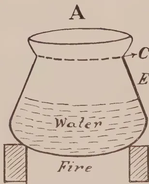
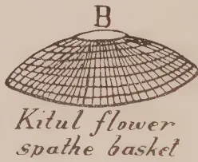
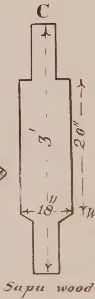
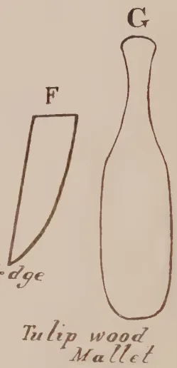
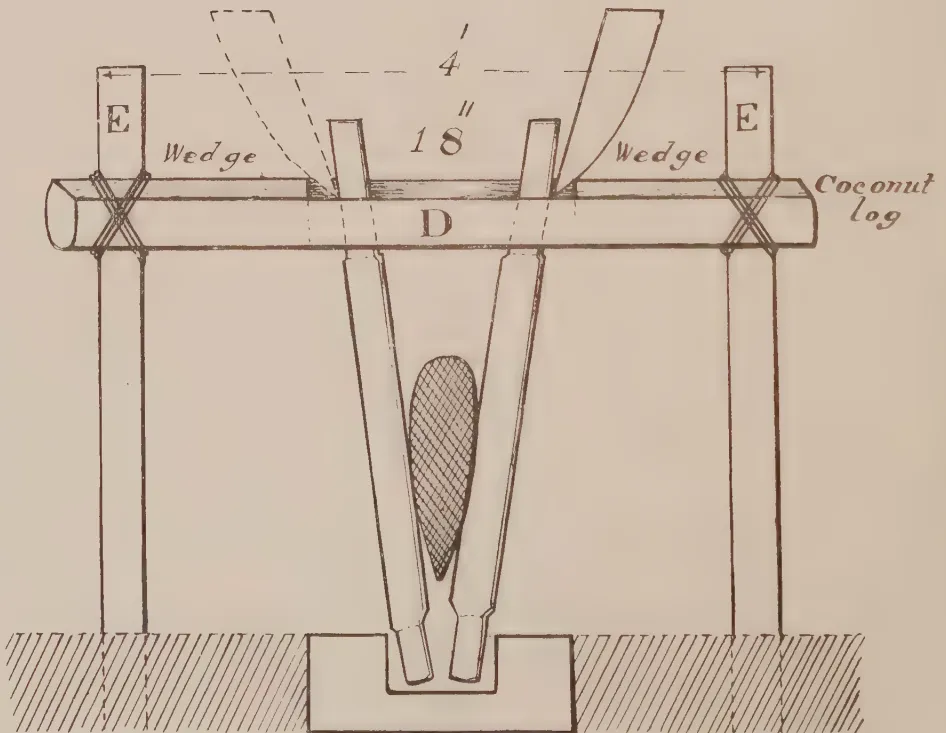

THE
TROPICAL AGRICULTURIST:
JOURNAL OF THE
CEYLON AGRICULTURAL SOCIETY.
VOL. XLVIII.
PERADENIYA, MAY, 1917.
No. 5.
LESSONS FROM EXPERIMENTS
WITH CACAO.
In recent numbers of the TROPICAL AGRICULTURIST reference has been made to experiments with cacao in different tropical colonies.
These experiments have been designed to answer questions in regard to the cultural treatment of cacao, its manurial requirements and the yields of different trees.
The results of various carefully designed experiments which have been carried over a sufficient length of time make it possible to draw some general conclusions.
At the outset, it is evident in all field trials with the cacao crop that there is a great individuality in the yields of different trees, even of the same variety. This necessitates that all plots should be most carefully duplicated or triplicated so that the error of the experiment may be calculated with certainty or that preliminary trials be carried on for some years before experimental manurial or cultural treatment is undertaken so that what may be looked upon as the "natural yields" of the plots may be ascertained.
Experiments which have been made in Trinidad into the "natural yields" of cacao plots clearly demonstrate the widely different yields obtained from different trees of the same variety in the same field, and has naturally raised the question whether it would not be possible in estate cultivations to cut out the bad yielding trees and replace them with supplies from heavy-yielding parents. It also opens up again the question of the possibility of putting out areas of grafted or budded plants taken from selected trees of good vigour, health and yielding capacity.
In Dominica and other West Indian colonies it has been clearly demonstrated that the most profitable returns are obtained in cacao which is heavily mulched or otherwise treated with
274[MAY, 1917.heavy dressings of coarse organic manures. Farmyard manure, if available, pays well in cacao cultivation, but where this is not obtainable mulches of coarse grass, leaves or herbage give marked and profitable increases in crops.
In some localities forking and the addition of phosphatic manures have yielded profitable returns, but the success of these treatments would appear to depend upon the type of soil and the climatic conditions prevailing.
The question of "shade" versus "no shade" continues to receive attention, but results seem to point to the fact that shade is required where protection from wind is desired and where suitable wind belts cannot be provided and that it is also a necessity when the conditions of atmospheric humidity are not naturally satisfactory. Cacao requires a humid atmosphere for success. When soils are light in character shade trees are often necessary to maintain a high degree of humidity in the atmosphere. This is to be noticed in many parts of Ceylon.
Soils that have a fair admixture of clay appear to require little shade in the cacao if this is well protected from wind, while crops in the same district on gravelly soils suffer considerably if adequate shade is not maintained.
The majority of estates adopt an intensive form of cultivation for cacao based upon the results of experiments, but peasant cultivations of this crop as a rule leave much to be desired. This is noticeable in all cacao-producing countries and has been receiving the serious attention of agricultural officers for some time past. The results of the efforts being made in the Gold Coast are being watched with interest and it would appear that some improvements have been made in the peasant cultivations of cacao in certain West Indian Colonies.
Prize schemes have been evolved and have in places been successful. Demonstration cultivations have proved most useful, and are of great assistance to itinerating agricultural instructors. The gradual gradations of good, though poor, to bad cultivation of peasant-holdings as one passes along the "cart-roads" away from good estate cultivations is quite an interesting study in some West Indian Colonies.
The peasant is quick to learn from ocular demonstration and more is gained by him from this method of instruction than from leaflets or lectures. If near to an estate he cultivates better than if farther away, and where estates are not numerous demonstration plots can be established with a fair chance of success.
MAY, 1917.]275The Central Rubber Station for the Netherlands Indies, at Buitenzorg, Java, in charge of DR. O. DE VRIES, is equipped for research and testing purposes, especially for the study of rubber preparation methods and testing samples for control and improvement of work on the estates. The Bulletin of the Station is distributed by application to the director.
DR. DE VRIES in a lecture before the Malang Planters' Association, at Malang, discussed the preparation of plantation rubber and the need for research, considering the relative position of the two principal forms, smoked sheet and crepe. Generally smoked sheet has a quicker rate of cure than crepe. The tensile strength of smoked sheet need not be below that of crepe, and it is often found to be higher, due to not overworking the coagulum as in the case of making crepe. Smoked sheet is inferior to crepe in the matter of uniformity, due to the method of preparation. Crepe in Java is generally prepared on older estates, with a long experience and well-regulated routine, whereas sheet making is often undertaken on estates just starting manufacture and, in consequence, the product is not so carefully controlled. The preparation of crepe is practically a mechanical process while the preparation of sheet is still often complicated by the large number of small pans and much hand-making. There are also irregularities in drying and smoking, so that the method of preparation affords much more chance for variation. There can be no doubt, however, that it is possible to produce sheets of very uniform quality.
The excessive rise in price of acetic acid has stimulated research with other coagulating material. Sulphuric acid has been tried and it has been found that slight variations in the amount used have an appreciable influence on the quality of the rubber, notably on its rate of cure. Sugar as a coagulant, according to some experts, is likely to cause much variation in the rate of cure, owing to bacterial action in the latex, dependent on the weather during tapping.—INDIA RUBBER WORLD, Jan. 1, 1917.
The rubber research stations in Java have decided to issue all their publications through one Journal the ARCHIEF VOOR DE RUBBERCULTUUR IN NEDERLANDSCH-INDIE. The publications will be issued in Dutch, but extensive abstracts or summaries are added in English. The following summaries are taken from the first number issued in February, 1917.
276[MAY, 1917.DR. O. DE VRIES.
(Partly after experiments of DR. N. L. SWART and DR. A. J. ULTEE.)
Coagulation by the aid of cane sugar, as published by EATON (AGRIC. BULL. F.M.S. IV., 29), was taken up by the Besoeki and the West-Java Experimental Stations; the results of the former were only published at a planters' meeting, the latter issued a special Bulletin on the subject (GORTER and SWART, Mededeelingen Rubber-proefstation West-Java No. 6, abstracted in AGRIC. BULL. F.M.S. V., 48). Several estates at the time when acetic acid was expensive made trials with this coagulant, and a large number of samples reached the Central Rubberstation for testing.
The result is that the difference between rubber coagulated by acetic acid and by sugar is insignificant. Tensile strength, slope (type after SCHIDROWITZ) and viscosity are nearly always the same, while in rate of cure a small difference is generally found, the sugar-coagulated rubber curing slower or quicker as the case may be. This means that with a running sale contract the change from acetic acid to sugar would nearly always mean a change in the rubber delivered, which, unless warning were given, must be considered undesirable; but in general the small difference in rate of cure can form no objection to sugar as coagulant, as the difference is well within the limits which are generally found for ordinary first latex crepe. In three series of experiments the uniformity from day to day (chiefly in respect to rate of cure) was not less with sugar-coagulation than with the ordinary acetic acid procedure.
Only one experiment as to the keeping qualities of sugar coagulated rubber has terminated so far, and it showed no harmful influence from the sugar. Several experiments have been started, however, and results will be published in due time. GORTER and SWART (l.c) have proved, that in coagulation with sugar the same acids are formed, that act in the slow coagulation with small quantities of acetic acid, so that a prejudicial influence on the rubber is not to be expected.
As the difficulties in the practice of sugar coagulation (discolouration or scum formation on the surface; incomplete or very slow coagulation when using bisulphite, and therefore a darker and sometimes uneven crepe) can be overcome, as is shown by the above mentioned publications, sugar might possibly be the coagulant most fitted to replace acetic acid in case of need.
DR. O. DE VRIES.
(Partly after experiments of DR. N. L. SWART.)
The opinion is still largely held that prolonged crepeing must be prejudicial to the fresh coagulum. EATON and GRANTHAM had stated already in 1915 (AGRIC. BULL., F.M.S. III., 218) that the influence of creping, if any, is only small, while after our experiments had been finished the results of CAMPBELL (BULL. DEPT., AGRIC., CEYLON, No. 24) became known. After crepeing as often as 50 to 70 times in the washing machine no difference could be found in the vulcanized product.
MAY, 1917.]277We thought fit to repeat these investigations, first because the above-mentioned investigators did not study the influence of smooth rollers, in which the rubber is most pressed, and further because no determinations of viscosity were mentioned, although a change in the viscosity of the raw rubber would be the first thing to be expected.
The influence of crepeing can only be determined, if the resulting pieces of crepes are of the same thickness: difference in this respect may cause a difference in the rate of drying, and thereby a difference in the rate of cure. This being allowed for, one would expect from prolonged crepeing a diminution of tensile strength and viscosity and a slower rate of cure. Our experiments tend to show in confirmation of the experiments of EATON, GRANTHAM and CAMPBELL, that often there is no difference at all, even with much longer crepeing than is ever practised on estates; in some cases small differences were found, though of no practical importance; and only in one case, where the rubber became somewhat warm by prolonged treatment on smooth rolls, was a marked diminution in viscosity found.
Tearing and cutting of the fresh coagulum seems to have little influence on its inner qualities; current opinion on this point is as absurd as the speculations on the "short or long fibre" of rubber.
In actual estate-practice of course rolling as little as is consistent with a good outward appearance of the crepe means a gain in time, fuel and wearing of machinery. Thin crepe under present market conditions has the advantage of rapid drying, though thick crepe with its rapid rate of cure might be preferred by certain manufacturers.
From our experiments the conclusions may be drawn that rolling a number of times more or less has no influence on the inner qualities of the rubber, provided enough water is used to keep the rubber and rolls cool. In trying to prepare crepe of uniform appearance and thickness it does not matter if this is reached by passing the rubber a few times more or less through the rolls.
DR. O. DE VRIES.
That the dilution of the latex would have an influence on the qualities of the rubber obtained from it by coagulation was to be expected. Rubber as a colloid in coagulating absorbs part of the serum-substances and retains them during the crepeing and washing process, and the more concentrated the latex, the more serum-substances the rubber encloses and retains.
Several experiments were made to determine what the influence of this factor may be in the process of rubber preparation. The results were:
4. The rate of cure diminished in an appreciable degree by dilution. The following table summarizes the differences for the two last named qualities:—
| Experiment I. | Experiment II. | ||||
|---|---|---|---|---|---|
| Dilution of latex. | Average | Dilution of latex. | Average | ||
| Index of viscosity | Standard time of cure | Index of viscosity | Standard time of cure | ||
| 11 % | 1.71 | 145 min. | 6 % | 1.70 | 150 min. |
| 16 ,, | 1.76 | ca 135 ,, | 9 ,, | 1.71 | 145 ,, |
| 21 ,, | 1.77 | 130 ,, | 12 ,, | 1.74 | 140 ,, |
| 26 ,, | 1.78 | 125 ,, | 14 ,, | 1.74 | 140 ,, |
| 31—38 ,, | 1.79 | 120 ,, | 17 ,, | 1.74½ | 135 ,, |
The not unimportant difference in rate of cure makes it desirable to dilute the latex to a standard rubber content to obtain rubber of uniform qualities.
In the preparation of smoked sheet a standard dilution is in general use, in Java 15 % dry rubber being mostly chosen as the dilution giving a coagulum that can be easily worked.
In the preparation of crepe a standard dilution of latex is not generally accepted, but must from the above-mentioned facts be declared as desirable. It is to be remarked that undiluted latex gives the quickest curing rubber, but using undiluted latex in coagulation has the great disadvantage that on rainy days a product of different qualities is obtained.
It may be emphasized that a standard dilution of the latex is not only desirable with a view to obtaining a uniform product, but also for regular and economical work in the factory. In fact this is the only way to use acetic acid sparingly. When the rubber content of the latex is unknown, on some days more acetic acid than necessary is added, resulting in a loss of acetic acid; and on other days not enough is used, giving a milky serum and loss of rubber.
DR. O. DE VRIES.
(Partly based on experiments of DR. P. ARENS and DR. N. L. SWART).
That the amount of acetic acid used in coagulations has no great influence on the inner qualities of the rubber, is already known from the results of other investigators. EATON (AGRIC. BULL. F.M.S. IV., 165) signalled this as a distinct advantage of the use of acetic acid over other acids such as sulphuric. Several of our experiments had been started before EATON'S results were published: we now wish to review the results obtained, as they not only confirm but also tend to amplify the already known facts. Our results may be summarised as follows:—
1. For quantities of acetic acid ranging from the minimum to four times as much, the tensile strength of the rubber shows no difference.
2. The slope or type remained the same in all experiments in which the rubber was prepared as crepe; in one experiment with smoked sheet the type was slightly less when using a double quantity of acetic acid, but this result will have to be checked by further experiments.
MAY, 1917.]2793. The rate of cure diminishes with increasing quantities of acetic acid, cf. by 10 minutes in 135 when using four times the minimum. For double the quantity of acetic acid the difference is sometimes 5 minutes, but in several cases it was found to be negligible.
4. The viscosity decreases somewhat with increasing quantities of acetic acid, the difference not exceeding 0.10 however even for four times the minimum amount, and often remaining near to or within the limit of experimental error (0.02 to 0.03).
As in ordinary estate practice great variations in the amount of acetic acid for coagulation (cf. half or double the ordinary quantity) will seldom or never occur, the use of acetic acid in practice will not form a factor causing important variation in the inner qualities of the rubber.
Economy in the use of chemicals of course necessitates the use of the minimum amount of acetic acid giving the desired coagulation within the desired time; but once this amount—which may differ for the method of preparation on different estates—is fixed, the small variations occurring in actual practice cannot be the cause of lack of uniformity in the number.
In Vol. LIII, No. 3, of the INDIA RUBBER JOURNAL (January 20th, 1917) is a contribution by DR. O. DE VRIES of the Central Rubber Station, Buitenzorg, entitled "The Co-efficient of Vulcanization as a Check on the State of Cure."
Though the paper itself deals with a technical point of the vulcanization process, it is of general interest as concerning the methods of testing rubber samples. Though DR. DE VRIES is of opinion that the chemical process of the combination of rubber and sulphur is in itself quite independent of the physical one determining the stress-strain curve, he has not in actual practice met with such big differences as those found by SCHIDROWITZ and GOLDSBURGH.
The reaction between sulphur and rubber, and the changes in the rubber-sulphur mixture which determine the mechanical properties as expressed by the stress-strain curve, are two different processes which may proceed independently one of the other.
For ordinary first latex estate rubber, both crepe and sheet, curved at a fixed temperature, the results tended to show that a parallelism between "state of cure as expressed by the stress-strain curve, and coefficient of vulcanization" exists within the limits of 0.5 per cent. of combined sulphur, though this parallelism is in reality accidental and may not hold good in special cases. In general it is not feasible to make deductions from one regarding the other.
It may be assumed that the mechanical properties are more important, and that the curve is a better gauge to judge of the properties of the curved rubber than the chemical condition as expressed by the "coefficient of vulcanization."
L. E. C. 280[MAY, 1917CHARLES EMERSON.
For the benefit of those who are not intimately familiar with the development of this industry it may be explained that for some time past a group of public-spirited producers had been running research stations in the Federated Malay States and in Ceylon.
A research station with the resident chemist assisted by a staff had been established in each of the countries indicated, many valuable experiments were conducted and much useful advice was given to planters, who for the most part had neither the time nor the resources to indulge in lengthy and complicated experiments for themselves. The necessary funds were supplied by a system of guarantee.
It was felt that the research work had played a very useful part in the development of the industry. Those responsible for its control worked in close co-operation with the Association, but it was thought that a formal amalgamation with the central body would be of benefit to the industry, and the Association therefore took over the whole organization both in the Federated Malay States and in Ceylon from January 1, 1916.
It is, of course, impossible at this early stage to predicate the final results of the amalgamation, but so far every indication suggests that the move was a judicious one, and we believe that our action has been of benefit to the planters generally.
As an instance of what is being done, one may, perhaps, notice a very interesting series of tapping experiments of comparatively recent date in the Federated Malay States. Various systems and methods, differing both as to mode of incision and interval of time, were tried and kept under observation for some considerable period, and the results obtained were set forth in a series of papers circulated. There is still considerable divergence of opinion upon this particular subject, and recorded observations upon experiments conducted in an exact and scientific manner are obviously of value.
The absorption of the research work and its future conduct involved a considerable increase in the rate of subscription to the Association and there have been withdrawals. These, however, have been extremely few, while the accessions have been numerous, and it appears to be clear that to a large number of new members the research branch proved attractive.
To the writer of these notes it is also significant as showing what can be done in the way of technical research by a voluntary association of British merchants without the aid of the State.
It is proposed when this war is over to develop the research branches in the East as and when opportunity shall present itself. For the present it is impossible to carry out any extension for the simple and conclusive reason that men are unobtainable. It is, of course, impossible within the limits of an article such as the present one to go at all fully into many matters with which the Association deals, and to those desiring further information a perusal of the last annual report is suggested.—Extract from an article to THE TIMES TRADE SUPPLEMENT, Dec., 1916.
MAY, 1917.]281CLAYTON BEADLE AND HENRY P. STEVENS.
Our attention was recently drawn by the Director of the Royal Botanic Gardens, Kew, to the probable importance of seed selection in the cultivation of Hevea brasiliensis. He pointed out the large increase in the yield of alkaloids from cinchona bark which has been obtained as the result of seed selection, and suggested that important results might similarly be obtained in the cultivation of Hevea brasiliensis.
In June last we addressed a letter on this subject to the Rubber Growers' Association, which has been submitted to MESSRS. MORGAN, MARSDEN and REEVE, the Association's resident scientific officers in the East. We give below the substance of our original letter, together with a digest of their views:—
In the cultivation of cinchona the yield of quinine from the bark has been raised from about 3 per cent. to 7 per cent. or more as the result of planting from the seed of trees whose bark yielded a high percentage of alkaloids. Can a similar method of seed selection be applied to increase the yield of rubber?
The matter, however, is not so simple in the case of Para rubber as in the case of cinchona. In the latter, the analysis of the bark reveals the percentage of alkaloids, but in the case of Para rubber it would be necessary to keep daily records of the yields of individual trees over some considerable period before it could be said with certainty whether the trees were good or poor milkers. Work of this nature would have to be undertaken as a preliminary to seed selection, as there seems to be some doubt as to how far trees fluctuate in their yields over relatively long periods. We were informed by one planter of experience that a tree which was yielding poorly might be yielding well in a few months' time and, similarly, trees which appeared to be yielding large quantities of latex might, in the course of a few months, be found to be yielding quite small quantities. We have not had an opportunity of obtaining figures over a sufficiently long period.
Having ascertained definitely that trees vary in yield, it will then be necessary to devise means for selecting seeds from good milkers and avoiding those from poor milkers. This matter is more difficult in the case of a rubber tree than in the case of cinchona. The cinchona produces a large number of small seeds, and consequently there is no difficulty in obtaining ample seed from a few trees, sufficient for planting up large areas. The bark gives a good yield of alkaloids when the tree is four years old and, although the percentage yield increases slowly over the next few years, the increase is small and regular, so that an examination of the bark of four-year-old trees is sufficient to determine their value as producers of alkaloids. On the other hand, Hevea produces a relatively small number of large seeds. Moreover, the bursting of the capsule by which these seeds become scattered makes it practically impossible to collect seeds from any particular tree.* There is also the question of cross-fertilisation, as, even if the seeds be taken from good milkers, they may have been pollinated from trees which are poor milkers.
The points which require elucidation are:—
* This difficulty might be overcome by cutting of seed-bearing branches just before the seed is fully ripe.
282[MAY, 1917.The necessary procedure would appear to be either:—
(a) To plant up a small area surrounded by jungle so as to isolate the trees in the area from those of the plantation, or:—
(b) To select a small area on an estate which is separate from other parts of the estate, and proceed to keep a record of the daily yields of the dry rubber from the trees of this area. As it becomes apparent that certain of these trees are poor milkers, they should be cut out until eventually the trees on this area consist of good milkers only.
If, as under (a), the trees have to be planted up on a fresh area, it will be seven or eight years before the poor milkers can be eradicated. If, however, an area already planted up should be found sufficiently isolated from the main part of the plantation to prevent the possibility of cross-fertilisation, a couple of years would probably suffice to ascertain which are the poor milkers and to cut them out.
The seeds now produced in this area will be entirely from good milkers. They will produce trees, the majority of which will be good milkers, although a few of them, in accordance with (5), may be throw-backs, and consequently poor milkers. However, the seeds from this area should be a vast improvement on seeds collected at random on an estate. Having carried the procedure so far, it would be well worth while to make a further selection by planting up a new area separated by a broad jungle belt from other Hevea trees, and again to proceed regularly to record the yields, eventually cutting out the poor milkers that will probably be found among them. In this manner seeds will be available which should produce practically nothing but good milkers.
There is, perhaps, an alternative to the first part of the procedure we have outlined, namely, the propagation of trees by means of cuttings. This is possible, and if found practicable the small area to be planted up for seed production could be furnished with good milkers grown directly from cuttings from the best milkers on the plantation.
The preliminary work carried out to distinguish between good and poor milkers may result in some simpler means being discovered by which either may be recognised. The investigation would be well worth undertaking from this point of view alone, as it would be of much benefit by enabling poor milkers to be cut out in the process of thinning out.
The matter, however, is one on which advice should be obtained from your botanists. We cannot profess to more than a general idea of the problem involved and the methods to be employed. We have, however, thought it worth while to bring the matter to your notice as we consider it to be of prime importance to the industry.
It is to be regretted that research of this description was not undertaken years ago by the Government Agricultural Departments in Ceylon or Malaya, as an ample supply of the best strain of seed would now have been available for planting purposes.
MAY, 1917.]283It should also be noted that deterioration in latex yields from newly-planted areas as compared with older areas is not only possible but, regarded from some standpoints, even probable. Thus, it is found that the cinchona trees which yield the smallest proportion of alkaloids from their bark produce abundance of seed, while exactly those trees which give the highest percentage of alkaloids are shy of fruiting. If it is possible to draw the parallel conclusion in the case of rubber trees, it follows that the present method of seed selection must result in a gradual deterioration of the rubber-yielding capacity of the tree for, by taking the seeds at random, a larger proportion of seeds from the prolific fruiting trees will be obtained, and these trees are just those which may be the poorest milkers.
Having now reviewed the matter, we will consider the various points in the order in which they have been raised:—
(1) To ascertain if there is an appreciable variation in the yields of individual trees over long periods. MESSRS. MORGAN and MARSDEN are agreed that no attempt has been made to obtain reliable data as to the variation in yield of latex and rubber from individual trees, nor is anything known for certain as to the regularity in yield over a long period. MR. MORGAN writes: "All planters are fairly sure that some trees are better yielders than others at all times," but also agrees that "yields may fluctuate." MR. MARSDEN is also of the opinion that certain trees "do yield well consistently whilst from others the flow is always scanty." Both MESSRS. MORGAN and MARSDEN draw attention to the occasional heavy yields from individual trees and suggest that such yields may be due to disease, especially canker which, according to MR. MARSDEN, in the early stages of attack stimulates the latex flow. In any series of experiments it is therefore necessary to examine the trees carefully to see that they are healthy.
(2) It being admitted that a variation exists to determine how a classification of good and poor milkers can be made, MR. MARSDEN states that good milking trees are known, but that for strict work it would be best to take the quantity and quality of latex figures for at least a year. It is certain that planters believe they can distinguish between good and poor milkers as on this depends the selection of trees in thinning out. MR. MARSDEN states that good milkers are characterised by "(1) fewness of seed pods, and (2) late wintering." If this be so, there would appear to exist the same relationship between yields of rubber and seed in Hevea as has been found to exist between yields of alkaloid and seed in Cinchona, and the same conclusion must apply, that is to say, with the present haphazard system there will be a tendency for the rubber-yielding capacity of the tree to diminish, but that by careful seed selection, it should be possible to raise the rubber-yielding capacity considerably above the present average level.
MR. MORGAN also refers to trees with a smooth bark of a pink shade which are said to yield better than trees with ordinary bark. These trees are found growing in patches.
(3) The collection of seeds from particular trees. MR. MARSDEN considers that this might be done by putting bird netting over the capsules on one or two branches. Owing, however, to the prevalence of pod disease (due to Phytophthora Faberi, see later) in Ceylon, it has been impossible to collect really healthy seeds during the last few years. This disease could be kept in check by continuous spraying over a small area intended for seed collection.
284[MAY, 1917.With further reference to the question of seed selection MR. REEVE has written the following report on the two points raised, i.e.—
(4) To avoid cross-fertilisation.
(5) Assuming that both male and female elements be derived from good milkers, there would probably be poor milkers among the ancestry. This would produce throw-backs in accordance with MENDEL'S law which might necessitate selection over another generation.
(4) To Avoid Cross-fertilisation.—This difficulty could be overcome by taking cuttings in the first generation. A tree known as a good milker could be lopped and the cuttings planted in some out-of-the way place away from other rubber trees preferably with a belt of jungle around. From these cuttings seeds would have to be saved and planted. Allowing 5–6 years in Ceylon for the trees to come into bearing, the good milkers could be picked from the bad and all the poor ones cut out. It would be necessary then to obtain seeds from the best milkers and plant separate plots from each tree's seed. When these plots come into bearing that with the least number of poor milkers could be taken as the purest strain, and from this plot after cutting out poor milkers the seed could be saved, knowing that such seed will give on an average 50 to 60 per cent., perhaps more of good milkers. New areas would need to be planted fairly thickly, and all poor milkers could then be cut out leaving, say, 100 trees per acre known to be good milkers.
Re the point raised as to Mendelism. Is it definitely known that the property of yielding an excessive quantity of latex is capable of inheritance as a Mendelian character. If this were so the establishment of a pure race of good milkers would be comparatively simple. Consider the simplest case of Mendelian inheritance, i.e., a cross between a pure bred good milker and a pure bred bad one. The first generation would be good or poor milkers according to the dominance of the latex-giving characteristic, i.e., if the good milker were dominant, a hybrid of fairly good milkers would result. From the impure hybrids on fertilisation pure strains and hybrids would result, and it would be necessary to pick out the pure strains and breed from them.
Probably nothing so simple would occur, and as DR. STEVENS suggests, there would almost certainly be a certain amount of bad milking strain in the ancestry which would have to be eliminated by breeding.
Even if the good milking characteristic did not follow MENDEL'S law it would probably be an inheritable fluctuation which by selection could be improved.
Rubber trees might also have been selected from a known good milker giving, say, 8 lb. dry rubber per annum at 12 years old with the average yield per tree at 6 lb. per annum and a breed of rubber trees could have been obtained giving on an average say lb. per tree per annum, thus increasing yields 25 per cent. Such a procedure would have been the correct one, and a fairly pure strain of good yields could have been obtained in any 20 years starting from the good yielding tree in bearing. Such experiments could have been carried on indefinitely until a pure strain of good yielders were obtained.
Such a procedure is impossible now, and all that can be done is to select seeds from good yielders; if fresh planting is to be done, plant thickly and thin out poor yielders where necessary. Taking a widely planted area, say 60 trees per acre, I think fully 75 per cent. of the seeds would be fertilised from the pollen of the seed bearer, and only about 25 per cent. cross-fertilised from other trees, since an insect once it arrives at a tree stays, and does not give itself an unnecessary amount of flying. Such an area of older trees with all bad milkers thinned out would give a fairly pure strain of good milkers.
Such a seed-bearing area would, however, need continuous spraying during the S.W. monsoon in order to keep it free from attacks of pod disease
MAY, 1917.]285(Phytophthora Faberi).* The ordinary rubber areas are full of this disease, and I do not think more than 1 per cent. of the seeds can be considered as good and plump and fit for planting. It is the exception in this district to pick up a really good seed when walking round an estate. Naturally, isolation in jungle would remedy this in that spores would be filtered by the jungle, and with about one or two spraying the area could be kept healthy.
I think the best suggestion for getting a good strain of seed is to take a small area of rubber of known yielding quality. This should be carefully watched for 2-3 years, and in this time all bad milkers could be eliminated. This would probably leave you with about 40-50 trees per acre, and these the very best yielders. This area could be kept sprayed regardless of expense in order to keep down pod disease, and the seeds from it carefully collected. It would be better of course if it were isolated from the rest of the estate to prevent any cross-fertilisation, or it could be surrounded by a belt of some quick-growing trees, such as Albizzias, to help in preventing cross-fertilisation.
The seed from such an area would not of course be a pure strain, but this could be allowed for by planting an excess of trees per acre up to 200. It is not the truly scientific method but is the most rapid one whereby a fairly pure strain could be obtained; proper scientific methods would take about 20 years' work to obtain a really satisfactory result.
MR. MARSDEN raises one or two points of a more general nature. He is of opinion that the seeds selected should be not only from trees of established good yielding capacity, but also of good bark-renewing ability. Presumably the bark-renewing ability is chiefly a question of the general health of the tree, and consequently in selecting seeds from good milkers we should avoid weakly or diseased trees. Until seeds of good milkers only are available, MR. MARSDEN considers that small extensions can be made without fear of disappointment if:—
We are indebted to the Rubber Growers' Association for permission to publish these extracts from their Report.—KEW BULL. No. 1, 1917.
Work has been begun in Ceylon on Seed Selection in rubber. It has been found by experiments at Peradeniya that there is usually one tree in every ten that gives outstanding yields of latex and rubber and the continuous records since 1908 of the tapping experiments at Peradeniya and Heneratgoda afford accurate data as to the fluctuations of yields of latex and rubber from individual trees.
On Estates, thinning is being generally adopted and in this way many of the poorer-yielding trees are being taken out of the plantations.
Tree No. 2 at Heneratgoda has shown itself a very heavy yielder. This tree is being reserved solely for seed purposes, and a fair area has been planted at Peradeniya from seed obtained from this tree. This area it is proposed to maintain as a seed reserve, and if the progeny of No. 2 tree possess the yielding characteristics of the parent, Ceylon will have in a few years a seed area which should prove a valuable asset to the rubber industry.
In Java also, areas have been planted for seed purposes—an officer of the agricultural department of that country having been specially deputed for a mission to the Amazon for making collections of seeds of the different varieties of Hevea to be found in the Hard Para localities.—[ED. T. A].
* This refers to Ceylon.
286[MAY, 1917.LAWRENCE P. BRIGGS.
(Continued from Vol. XLVIII. Page 10.)
Various tests show that Cochin China plantation rubber compares favourably with the similar product of other rubber producing countries. The latex produces the usual percentage of rubber and the purity of the manufactured product is not inferior to that of other rubber.
The comparison of the analysis of the latex of the Soui-giao plantation, made by M. VERNET in the Pasteur Institute at Nhatrang, with tests of Brazil and Ceylon rubber shows that the latex of Cochin China contains a greater proportion of rubber than that of Brazil and slightly less than that of Ceylon.
| Constituents. | Soui-giao. | Ceylon. | Brazil. |
|---|---|---|---|
| Rubber ... | 37.91 | 41.29 | 31.70 |
| Water ... | 54.38 | 55.15 | 56.37 |
| Albuminoids ... | 2.30 | 2.18 | 1.90 |
| Residue ... | 3.35 | .41 | 0 |
| Sugar ... | 1.43 | .36 | 0 |
| Resin ... | .62 | 0 | 0 |
| Acids ... | .01 | 0 | 0 |
| Organic substances ... | 0 | 0 | 7.13 |
| Other products ... | 0 | 0 | 2.90 |
The following table shows the results of analyses made at the Michelin factory of the various classes of Soui-giao rubber, compared with fine Para rubber of the Upper Amazon:—
| Para. | Smoked. | Natural Coagulation. |
Coagulation with Acetic Acid. |
Scraps. | |
|---|---|---|---|---|---|
| Rubber ... | 96.87 | 94.60 | 97.02 | 95.87 | 94.34 |
| Resins ... | 2.62 | 4.00 | 2.44 | 3.59 | 1.90 |
| Moisture ... | .32 | .68 | .15 | .18 | 1.66 |
| Residue ... | .19 | .62 | .39 | .36 | 2.10 |
These tables show the physical composition of Cochin China latex and rubber. The actual physical tests of the quality of Ong-Yem rubber sent to the International Rubber Exposition at London in 1911 gave this rubber a rating of 89.5 points out of a possible 100. Tests were also made to determine its tensile strength (i.e., the weight necessary to break a piece of rubber by by 2 inches), its extension (i.e., the length of the above piece at the moment of breaking), its strain or coefficient of resistance (i.e., the extension produced by half the weight necessary to break it) and its force of tension, or stress (i.e., its coefficient of rupture per square inch). These tests show the following comparison between the Ong-Yem product and fine hard Para rubber.
| Tensile Strength. |
Extension. | Strain. | Stress. | |
|---|---|---|---|---|
| Para ... | 59.4 pounds | 9 in. | 4 in. | 440 pounds |
| Ong-Yem ... | 55 pounds | 8 in. | 4 in. | 475.2 pounds |
Cochin China rubber received honourable mention at the Singapore Exposition (1910), a diploma of honour at the London Exposition (1911), a Grand Prize at the Ghent Exposition (1913) and a diploma of honour, two silver medal diplomas, two silver medals and a gold medal at the London Exposition (1914). It is only necessary to add that it receives the highest prices in the rubber market of Paris.
The installation used in the preparation of the rubber varies from a shed containing a set of rollers and some drying space to a fine, large building and the latest modern equipments such as are found on the plantations of Xatrach and Suzannah. The smaller plantations prepare the product with no equipment except a single roller, while the natives roll it into a mass like wild rubber; but the larger plantations are equipped to make the best quality of smoked sheets of crepe. The Belland estates, which until 1913 produced nearly all the rubber exported from Saigon, now make only crepe and scrap rubber, while Xatrach plantation, which during the past two years has been the most productive, turns out various grades of rubber in the following proportions: smoked sheet, crepe Nos. 1, 2, 3 and 4.
Cost of production has, up to the present time, been such a variable quantity that it is very difficult to say anything about it. Only one plantation or group of plantations—the Belland Estates—has approached its limit of production. The Xatrach plantation is the most productive at present, but its trees are young and some experts are of the opinion that the installation and initial expense was too great for the size of the estate. It is estimated that, when the larger plantations are fully developed, the cost of production would be about 50 cents (United States currency) per kilo—a figure somewhat below that of the neighbouring countries of the Far East. None of the plantations have ever been able to produce at this figure, except perhaps, the Belland Estates, which have practically no installation except crepe rollers.
One of the chief factors of cost of production is labour. The labourers on the rubber plantations of Cochin China are nearly all Annamites or Mois. The cost of coolie hand-labour is about 15 to 20 cents (United States currency) per day for men, and 10 to 15 cents for women, with or without rice. The Annamite is industrious, apt and fairly efficient, but slow. The Mois—a semi-savage tribe—are inferior to the Annamites. The Loc Ninh plantation has imported about 600 Javanese coolies. Their slight superiority to the Annamite may be due entirely to their previous training in this work.
The region directly tributary to the port of Saigon—Cochin China, Cambodia and Southern Annam—is not over-populated. This region comprises more than 100,000 square miles and has a population not much above 5,000,000. It is a very rich country. The exports from the port of Saigon generally amount to about $40,000,000 per year—more than 70 per cent. of the entire export of French Indo-China, although this region has less than one-third of the total population. This exportation is almost entirely of agricultural products—mainly rice. Saigon generally ranking second to Rangoon among the ports of the world in the exportation of this product.
288[MAY, 1917.During rice-harvest the labour question is sometimes an anxious one, and this will be increasingly true as the agricultural resources of the country develop. Rice-harvest, fortunately, comes during the dry season when there is least demand for labour on the rubber plantations. Various attempts have been made to transplant cooly labour from the over-populated districts of Tonkin, where the labourer is more skilful and more industrious and receives smaller wages. This may prove to be the future solution of this problem if it should ever become a serious one. There are many Chinese coolies in Saigon and Cholon, although none has yet been employed on the rubber plantations. Chinese labour is generally slightly more expensive but considerably more efficient than Annamite labour, and there would be no difficulty in inducing Chinese coolies to come in sufficient numbers to supply any demand of the labour market; but Chinese labourers are more independent, and it is quite likely that the French Government would object to any considerable influx of Chinese cooly labourers into Cochin China.
The question of health condition is not a serious one among the coolies of Cochin China. There is always some cholera and often bubonic and pneumonic plague among the natives, and it is thought that the red soil of the rubber plantation is conducive to a peculiar native disease, which the French call "fievre du bois" (fever of the woods); but there has never yet been a serious epidemic of any kind on any of the rubber plantations. Famines are unknown in Cochin China. Since the beginning of the rubber industry here, the annual exportation of rice from the port of Saigon has never fallen below 600,000 tons. Almost every year Cochin China is called upon to relieve the sufferings caused by drought or flood in Tonkin.
After the rubber is prepared, there remains the question of its transportation to Saigon. Some of the older plantations: e.g., the Belland Estates, are within sight of the city; but the newer plantations in the red soil district are more distant. The plantations of Suzannah, Xuan-loc and several others in the province of Bienhoa are located 45 or 50 miles from Saigon, but near the railway running to Nhatrang, while the Xatrach Locninh and other important plantations of the province of Thudaumot are 65 to 75 miles from Saigon by automobile. However, the roads are level and good and the high value of rubber combined with its small bulk makes transportation a question of relatively small importance. The construction of the railways and automobile roads through the rubber district offers no serious difficulties, and the development of transportation facilities is sure to keep pace with the settlement of the country. Then, too, Cochin China has a wonderful system of water transportation. None of the rubber plantations are very distant from a stream or canal by which rubber can be cheaply transported by sampan to Saigon.
Saigon is the most important French seaport outside of France and is accessible to vessels of any draught. It has regular freight connections with the mother-country as well as with Singapore and Hongkong and frequent service to Manila, Bangkok and other neighbouring ports.—INDIA RUBBER WORLD, December 1st, 1916.
Kilogram=2.2 pounds.
MAY, 1917.]289In the quarterly journal, No. 2, 1916, an account was given of certain interesting laboratory experiments by C. M. HUTCHINSON, published in Bulletin No. 48, AGRIC. RES. INST., Pusa.
By these researches HUTCHINSON was led to the conclusion that a great improvement in efficiency might be obtained if green crops instead of being buried in the area upon which they grew, were first treated in such a way as to bring them into a more suitable condition for use as manure.
In Bulletin No. 63, there is now published an account of field results which confirm the theoretical conclusions arrived at.
The bulletin is of importance and its perusal would be of great interest and benefit to all planters who are interested in understanding the principles which govern the methods they practice for the improvement of their gardens.
“The Method.—Borrow pits were dug at the sides of the field previous to cutting the green crop; this being done during the rains the pits are filled with water; the cut crop was placed in the pits, left there for periods varied experimentally from 24 to 48 hours, removed from the pits, stacked in heaps and allowed to ferment for varying periods of time, after which the rotted manure was applied to the soil. It was at first found necessary to water the heaps occasionally to prevent drying out, but this was subsequently avoided by plastering their outsides with clay, comparatively small quantities of water being occasionally applied to prevent cracking of the latter.
“Further modifications of this method were adopted subsequently; in order to avoid loss of nitrogen as ammonia, the water remaining in the pits was used for moistening the heaps, and the soil at the bottom of the pits was dug out and made into alternate layers with the green manure in the heaps. As large quantities of ammonia pass into the water during fermentation the smallest possible quantity of water should be used so as to make it possible to utilize the whole of it for moistening the heaps.
“It was found that more complete fermentation could be obtained by inoculating the heaps with impure cultures of cellulose-destroying bacteria obtained simply by making a water extract of fresh cowdung.
“It will be seen from the above description of the method that its main object is to obtain more complete decomposition of the organic matter than can be arrived at by the ordinary process of burying, this result being achieved by introducing anaerobic conditions in the early stages. Variations of the method should be made to suit local conditions, merely keeping the general principle in view in so doing.
“It appears to the writer that certain advantages are connected with the use of this method as compared with the ordinary practice, and that they may in many cases more than balance the extra cost of the labour required for carrying it out.”
290[MAY, 1917]Advantages.—It was shown in the first publication that the efficiency of green manuring as usually practised is absolutely dependent upon a sufficient supply of water for the decomposition of the buried green manure, so that the ordinary method failed in the absence of convenient showers of rain, while this new method proposed is independent of rainfall.
Other advantages are the immediate return from green manure treated in this manner compared with that buried in the ordinary way; and that when it is found that the quantity of manure grown on a given area is insufficient to produce the best effect the total green manure may in such a case be concentrated upon a smaller area.
Also the fermentation in the soil of old plants has been shown to be not so satisfactory as that of young succulent plants.
This new method allows older and therefore more bulky crops to be made use of.
"The immediate action of fermented sunn hemp was shown in experimental plots th of an acre sown with oats. Here the fermented manure was concentrated by application to half the area on which it was grown."
The resulting figures were:—
| Treatment. | Grain. | Straw. | |
|---|---|---|---|
| Control ... | 885 | 2,820 | } lb. per acre |
| Sunn hemp ... | 960 | 2,835 | |
| Fermented sunn hemp... | 1,540 | 2,970 |
"This experiment was repeated in the following season both with oats and tobacco, but in this case the results were modified by the fact that the amount of soil moisture present varied from an optimum amount in the plots forming one row at the north end of the field down to a quantity obviously insufficient for full growth at the south end. The plots were arranged in triplicate in three rows running east and west, so that, in the north row the moisture was good, in the middle row it was slightly in defect, and in the south row decidedly so. The results varied in accordance with this difference. In the north row there was but little difference in crop between the plots which had had sunn hemp buried and sunn hemp fermented, the moisture present being sufficient to ensure decomposition of the green manure, whereas in the south row the fermented manure produced a considerably higher return than the buried green crop."
This experiment on the north rows containing an optimum amount of soil-moisture is extremely important from the point of view of the tea industry.
It is shown that where water conditions are favourable there is no advantage to be obtained by using this preliminary fermentation rather than in hoeing in the green manure where it grew.
Now in the tea districts it should nearly always be possible to grow the green manure at such a season that sufficient rainfall can be depended upon both to obtain good growth of the green manure, and to ensure its proper decomposition after burial. It is also to be noted that the benefit of the fermented green manure in the first experiment was mainly shown in increased production of grain, there being no great increase in vegetative growth. In tea cultivation it is our object to increase vegetative growth.
"In a further experiment on manuring tobacco with fermented sunn hemp, two methods of preparing the material were tried.
(1) Aerobic, in which the green manure was fermented in heaps kept moist but not covered with clay.
MAY, 1917.]291(2) Anaerobic, in which the heaps were plastered with clay. The sunn hemp was first cut into short lengths and soaked in water in a pit for 24 hours. It was then removed from the pit and transferred to another shallow one, in this case about one foot deep and eight feet square.
Aerobic fermentation.—In this method the soaked material was arranged in alternate layers of sunn and soil, the former about 3 inches and the latter about inch in thickness. The whole heap was then covered with a layer of soil about 3 inches thick and finally with one of straw to prevent evaporation. Watering was carried out about once a week, sufficient water being added to keep the top layer moist.
Anaerobic fermentation.—The heaps were arranged in the same way, but each layer was consolidated by treading down and the whole heap was finally plastered with clay about one inch thick.
Fermentation was carried on from 15th August to 5th October, 1915 (about 48 days), after which the heaps were opened up and the fermented material transferred direct to the soil of the experimental plots.
Application. The preparation of the fermented manure was not carried out in time to allow of its application to the soil sufficiently early to entirely avoid toxic effects. Two methods of application were adopted in order further to test the existence of toxins in the anaerobically prepared material.
(a) In these plots the manure was buried in furrows, the plants being placed in intervening ridges.
(b) In these the manure was buried in the ridges the plants being in the furrows.
The fermented manure was applied at rates which represented concentrations of 3:1 in one series and 6:1 in the other, i.e., the amount used on one acre was prepared from the green manure crop cut from three acres in the first and from six acres in the second.
The results are given in the following table":—
TOBACCO MANURING WITH FERMENTED SUNN HEMP.
| No. of plots. | Treatment. | Green Leaf. | Pounds per acre. | ||
|---|---|---|---|---|---|
| Furrow (b) | Ridge (a) | ||||
| lb. | Increase lb. | lb. | Increase lb. | ||
| 1 | No manure | 11,252 | — | 9,609 | — |
| Fermented Sunn anaerobic 3:1 | 12,022 | 770 | 11,500 | 1,891 | |
| Fermented Sunn aerobic 3:1 | 14,550 | 3,298 | 13,548 | 3,939 | |
| Fermented Sunn anaerobic 6:1 | 14,898 | 3,646 | 16,118 | 6,509 | |
"In these plots the superiority of the aerobically fermented manure over that prepared anaerobically is obvious; there is reason to believe, however, from other observations, that this would not invariably be the case, especially in view of the fact that the manure was not allowed any opportunity of aeration after fermentation and before burying in the soil. The plants in the ridges gained an advantage in this respect from the fact that their feeding roots did not reach the manure so early as did those of the furrow planted seedlings, as well as from the better aerated soil in the
292[MAY, 1917.ridges in which they made their early growth, before drying out of the soil had taken place to any extent. When this began to occur the roots had reached the buried manure and were not only benefitting by the nitrogen supply derived there but from the moisture-holding power of the well rotted vegetable matter, to which reference has already been made.
"With regard to the difference in character of the anaerobic and aerobic preparations, it was found that when first taken from the heap the former contained no nitrate but a considerable amount of ammonia (recoverable by distillation with magnesia although not free). A water extract of the material was toxic to seedlings, but this condition was changed and nitrate formation took place after aerobic conditions were introduced, more complete nitrification of the organic nitrogen present being eventually obtained than was the case with the aerobically prepared material. This was in accordance with the laboratory observations of the previous year, and confirms the conclusions as to the possibility of preparing a more rapid-acting manure by this method, keeping in view, however, the necessity for interposing an aerobic stage between the anaerobic preliminary one and the final application to the soil, not only to promote nitrification, but to ensure the oxidation and destruction of the toxins produced."
This work done on this method of using green manure is of great interest to the Tea Industry because it affords valuable information on the manner of action of green manures. On the present evidence, however, we are of opinion that in the plains the new method is not likely to prove of practical value in tea cultivation; chiefly because the moisture conditions for green manuring as at present practised in the tea districts are generally so satisfactory that the advantages to be gained by this new method are not likely to be sufficient to repay its increased cost.
On steep slopes such as are found in the Darjeeling district the correct treatment of a green crop has always been a difficulty.
The hoeing in of a green crop would there lead to such an increase in loss of soil by wash that the general method of treatment cannot be followed.
The more general practice has been to allow the crop to rot on the surface where it grew with or without previous sickling; which method entails a considerable loss in efficiency.
Some modification of one of the methods described by HUTCHINSON may be expected to give sufficient advantage to repay its increased cost.
From what has been quoted it will be seen that this research is not yet completed, in that the best method of effecting the preliminary decomposition is not yet ascertained with certainty.
In Darjeeling too we have the advantage that the rainfall would generally be sufficient to render watering by hand unnecessary. Having regard to the necessity of making the smallest possible demand on labour, the following method is suggested for the present:—
Cut the green manure and rake into convenient heaps. The green stuffs in the heaps should be trodden down as compactly as possible, watered, extract of cowdung added, and then covered with about 3 inches of soil. The heaps should be allowed to ferment for about 48 days, with occasional watering if necessary.
The fermented material should then be spread over the soil and allowed to lie exposed to the air for about a fortnight and then forked in.
If a little bone dust were mixed with the heap it would increase the efficiency of the green manure and it would probably decrease the length of time necessary for fermentation.—QUARTERLY JOURNAL OF THE SCIENTIFIC DEPT. OF THE INDIAN TEA ASSOCIATION, Part IV., 1916.
MAY, 1917.]293This manure has been used largely on tea estates in North-East India during the last eight or ten years, and various reports of its action have been made from time to time in this Department's publications.
At the present time the name Sterilised Animal Meal is used by more than one Calcutta firm which deals in manures, and this name carries with it no guarantee that any definite class of raw products has been used in, or that any particular treatment constitutes, its manufacture, nor is there any criterion as to the composition of the finished article other than that given by the percentages of total nitrogen and phosphoric acid contained in it.
The manure of this name, however, referred to in the publications of the Scientific Department, was, until the outbreak of the war, sold by one firm only, and in its manufacture the following features were invariably maintained:—
The following details of the manufacture of this Sterilised Animal Meal will be of interest to those planters who have made use of it on their estates, for the bulk of the Sterilised Animal Meal sold at present in Calcutta is manufactured in exactly the same way and constitutes the same product.
In Calcutta the carcasses of horses, cows and buffaloes, etc., are at the disposal of the municipality, which has been in the habit of letting this monopoly to firms who manufacture Sterilised Animal Meal. It is an interesting fact that in Calcutta the dead animal is not the property of the individual who owned it when alive, in fact the removal of the carcase to such place or places as the municipality directs must be done at the expense of the owner of the animal when it was alive. In the process of transport carcasses are often purchased for small sums by members of leather working castes from the people who are removing them. The carcasses in such cases are thrown away, after removal of the hide and devoured by vultures, and are lost for purposes of manure manufacture.
In the preparation of Sterilised Animal Meal by the two firms which on one or other occasion have shown the writer over their works, the carcasses were skinned and cut into large pieces and put into an inner perforated cast-iron cylinder which was surrounded by an outer air-tight steam-jacketed cylinder about five feet in diameter. The perforations in the inner cylinder
294[MAY, 1917.are about half an inch in diameter. The treatment consists in drying in superheated steam for five hours. During this time (beginning from half hour after turning on the steam) a liquid resembling soup is run off through the outlet into a vertical vessel the "Separator" in which it collects, and oil or tallow comes to the surface. The outlet of the "Extractor" is then closed again and the inner perforated horizontal cylinder is then revolved while superheated steam is driven into the outer jacket (not into the chamber itself) and the top of the extractor opened to the air. At the end of three hours drying the meat falls away from the bones and is in a sufficiently finely divided condition to fall entirely through the holes in the inner horizontal cylinder on to the bottom of the chamber, in the form of a fine mealy powder mixed with coarser pieces of fibre and small bones.
The liquid which is run off through the outlet into the separator is allowed to stand until oil collects on the surface. This oil is suitable for the manufacture of country soap. The liquid which is run off after separation of the oil contains gluey substances which are rich in nitrogen, but the evaporation is a costly matter. The finely divided dry meat material and the bones, which are obtained by this extraction, form the basis of Sterilised Animal Meal and are mixed with the materials obtained by the extraction of raw products other than whole carcasses, i.e., fresh bones, dry bones, horns and hoofs. The percentages of nitrogen and phosphoric acid contained in these products varies to some extent, but are roughly as follows:—
| Nitrogen. | Phosphoric Acid. |
|||
|---|---|---|---|---|
| Meat meal | ... | (Derived from carcasses) | 7.5 | 7.5 |
| Horn | ... | { (Derived from horns and hoofs) |
10.0 | 2.0 |
| Extracted bone meal | { (Derived from raw and fresh bones) |
5.5 | 20.0 | |
| Steamed Bone Dust |
The resultant mixture of these substances in the proportions in which they are produced would contain a considerably greater proportion of phosphoric acid than would be suitable for a manure which is to be well balanced for tea, because larger quantities of bones, which are richer in phosphoric acid than in nitrogen, are obtainable than of horns, hoofs and meat, which are richer in nitrogen, and consequently materials of high nitrogen content which still are capable of coming under a category indicated by the name Sterilised Animal Meal are required to balance the manure. For this reason blood meal which contains anything from 9 to 13 per cent. of nitrogen is an extremely valuable auxiliary. Blood is obtained from the slaughter houses and blood meal is prepared simply by the evaporation of the water it contains. The early stages of this evaporation are carried out by boiling, small quantities of sulphuric acid being added to the boiling blood to prevent loss of ammonia which would otherwise take place during the process of evaporation. Blood meal is a black shiny granular substance, easy to handle, and with good keeping properties, and it is reported to be quick in action, and consequently it is a valuable means of increasing the ratio of nitrogen to phosphoric acid in Sterilised Animal Meal and increasing at the same time its rapidity of action as a manure.
MAY, 1917.]295In a manure prepared in this way from several ingredients it is inevitable that there should be slight fluctuations in the nitrogen and phosphoric acid content, and it is usual to adjust these if necessary by the addition on the one hand of more bones to increase the phosphoric acid content or on the other of small quantities of soluble substances of high nitrogen content such as sulphate of ammonia or nitrate of soda.
It is desirable that the quantity of soluble nitrogenous manures incorporated in this way with Sterilised Animal Meal should be confined to a quantity sufficient to alter the nitrogen content of the whole by a few units per cent. only. Otherwise the nature and action of the manure might differ from that indicated by its name.
The percentage composition having been adjusted it is necessary that the manure should be properly bulked and sufficiently finely divided to allow of easy distribution and quick decomposition. Bones and meat meal products should be sieved through a 3/32" mesh. The blood meal and other ingredients on account of their more ready decomposition do not require to be so finely divided. Horns and hoofs too do not lend themselves easily to such fine division, but the criticism can be levelled at many samples of Sterilised Animal Meal taken at random in the tea districts that the fragments of bones are not sufficiently small.
When carefully prepared, and if protected as far as possible from rain or excessive moisture, Sterilised Animal Meal keeps well.
Ordinarily Sterilised Animal Meal contains about a half per cent. of potash, and several special Sterilised Animal Meals are on the market which consist of ordinary Sterilised Animal Meal prepared as described above, mixed with different percentages of nitrate or sulphate of potash with the object of increasing the amount of potash to a figure which permits of the sellers referring to it as being a "complete" manure, i.e., one which contains nitrogen, phosphoric acid, and potash in well-balanced relative proportions.
The special merits of Sterilised Animal Meal are due to the fact that it is a concentrated organic manure containing high percentages of nitrogen and phosphoric acid, in various degrees of availability. It is recognised that bones alone, even although they contain a small percentage of nitrogen, have often proved ineffective as a manure for tea, but that, when used in intimate combination with readily available nitrogenous organic substances, their value is very much increased. It is probably for this reason chiefly that, taken over a range of soils and seasons, Sterilised Animal Meal has acquired a well merited popularity. The best results are usually obtained when it is used on light well-drained soils, but it also does well on certain heavier soils, particularly those of the Red Banks.
A type of manure closely allied to Sterilised Animal Meal is fish. In this, however, most of the nitrogen is in a rather more readily available form, and fish manures, for this reason, act more quickly; but it is probable that for the same reason the nitrogen in these manures is rendered available and made use of before much of the phosphoric acid has come into action, and consequently the residual effect of fish manures is usually less noticeable than that of Sterilised Animal Meal.—G. D. H. in the QUARTERLY JOURNAL OF THE INDIAN TEA ASSOCIATION, Part IV., 1916.
296[MAY, 1917.W. B. GADY.
So many inquiries have been received concerning fertilizers and their relation to crop production that it has seemed desirable to present a short discussion of these matters at this time. We are often asked what fertilizer to use for a given crop, and samples of soils are frequently received with a request that they may be analyzed and an opinion given as to what fertilizer should be used to correct their sterility or to increase their productivity. An attempt will here be made to show why the chemist is at times unable to furnish the desired assistance to the planters. To do this successfully it will be necessary to go somewhat into detail concerning the nature of soils in general.
The term "soil" in its broadest sense, is used to designate that portion of the surface of the earth which has resulted from the disintegration of rocks and the decay of plants and animals, and which is suited under proper conditions of moisture and temperature for the growth of plants. Hence soil is composed of two distinct parts: The inorganic or mineral portion derived from the rocks, and the organic or vegetable portion derived from the decay of plants and animals.
It is well known that plants, like soils, are composed of organic and inorganic portions. The organic portion of plants comprises by far the larger amount, while in the soil the reverse is true.
The organic constituents of plants are composed of the elements carbon, hydrogen, oxygen and nitrogen. They compose ninety-five per cent. or more of the total weight of plants, and are entirely driven off or burned away when a plant is heated to a sufficiently high temperature. The inorganic portion of plants is that part which remain after burning and is commonly called ash or ashes, containing the same mineral constituents as are contained in the soils on which the plants grow. Since soils differ in the relative amounts of these substances the composition of the ash of plants is likewise variable, although the same substances are generally present in all cases. This is the natural result of variation in the needs of the plants with reference to their mineral food. For example, sugar cane and pine-apples growing in the same soil under the same conditions will assimilate very different amounts of the various mineral elements.
Experiments both in the field and laboratory have shown that while all the soil constituents seem more or less necessary for the plants few of them are more important than the others. The more important elements are nitrogen, potassium, phosphorus and calcium (the latter when combined with oxygen, commonly called lime). These four elements are the only ones that need concern us, for the others are always present in sufficient quantities under usual conditions. An originally fertile soil may be depleted of certain elements by the cultivation of a given crop year after year, whereas if the crop be abandoned for a few years and some other crop or crops be grown which consume different amounts of the plant food ingredients, the soil fertility might be maintained without recourse to extensive fertilization, thus effecting a considerable saving of time and money. For
MAY, 1917].297example, if all the elements were available in sufficient quantities to produce fifty tons of cane per acre, except for one element, say phosphorus, and this element was only available for five tons per acre, then the yield could not be raised beyond that point per acre without the addition of more phosphorus; whereas other crops might be grown on the soil (legumes for instance) that would not deplete it of its small phosphorus supply and would in addition add nitrogen to the soil at the same time that more phosphorus and potash were made available, thus making possible again the successful culture of the original crop.
The benefits derived from the application of lime to the soil, although in many cases great, do not necessarily arise from any distinct fertilizing action of the lime, although plants need plenty of it. As a rule any soils which will grow crops contain sufficient lime for a number of years. Its action is both chemical and mechanical. The mechanical action of lime tends to lighten heavy clays, and to make firmer the light sandy soils. If a lump of clay is stirred up with a little rain water the water becomes muddy and remains that way for some time. If, however, a little lime is added to the muddy water the suspended particles of clay begin to settle and in a short while the water is clear. This sort of action takes place when lime is added to heavy clay soils, with the result that the soil becomes more porous and assumes a higher capacity for absorbing water and holding it. Thus the danger of excessive erosion by heavy rainfalls is diminished, and the evil effects of prolonged drought mitigated. It also permits a freer circulation of the gases found in the soil, which serve to hasten the availability of the plant foods and are necessary for proper root development. Lime also acts on felspar and other rocks containing potash in an insoluble form, decomposing them and setting the potash free. It also hastens the decomposition of the nitrogenous organic matter and at the same time renders the soil more retentive of the plant-food products formed.
In many cases it is immaterial whether lime is applied as lime or as carbonate or limestone, provided that the latter is ground to a fine powder.
* Large quantities of lime should not be employed on sandy soils in a single application, although there is less danger in using ground limestone than in the employment of either burned or slaked lime.
"Slaked lime is usually applied to land, for ordinary purposes, at rates ranging from half a ton to two and a half tons to the acre, and at intervals of four to six years. Slaked lime usually contains 65 to 70 per cent. of lime and magnesia; burned lime before slaking contains 90 to 98 per cent. of lime and magnesia, whereas ground limestone and high-grade marl contain from 48 to 52 per cent. The quantities of each of these forms to employ should be varied in accordance with their analysis, bearing in mind, however, that it is usually safer on light soils to make the applications of burned and slaked lime relatively smaller than those of ground limestone and marl. On all light, sandy, and gravelly loams which are likely to become dry, ground limestone or marl should always be used if possible, but for flocculating heavy clay soils, burned or slaked lime is usually more quickly effective."
* Wheeler Standard Cyclopaedia of Horticulture.
298[MAY, 1917.It is difficult to say, however, just which soils will be improved by liming and which will not; this is a matter that must be settled by experiment in nearly every case. As a rule heavy clays are benefitted but there have been cases whereof two soils, apparently the same, one was benefitted, the other not, and again at times sandy soils are benefitted and again not. The need of lime must either be determined by experiment in the field or in the chemical laboratory.
Humus is formed by the decomposition of vegetable and animal matter. Its real composition has never been definitely determined, but it is a known fact that soils deficient in humus such as light sandy or very heavy clay soils generally are much improved by the growing of cover crops (sword beans, vetch, or other legumes) to furnish a supply of this material or by its application in some other form. This beneficial action is seen even if the soil is sufficiently provided with mineral substances for crop growth. As a rule a soil rich in humus is generally considered a fertile soil, as the humus keeps the plant-food elements from leaching beyond the reach of the plant roots, and only gives them up as they are needed by the plant. The presence of humus is of great importance in holding the water supply where it can be reached by the roots.—GOVT. OF PORTO RICO BOARD OF COMMISSIONERS OF AGRICULTURE, BULL. NO. 16.
H. D. YOUNG.
(1) Nitrogen is the only fertiliser which in this experiment seemed to exercise a specific effect on the composition of oranges.
(2) Applications of nitrogen to the soil resulted in a slightly lower amount of sugar, a somewhat coarser fruit, and a little less juice in the orange.
(3) The effect of nitrogen was the same, whether applied alone, in combination with either potash or phosphoric acid, or both.
(4) The effect of nitrogen was greater in 1915 than in 1914. As the crop was picked about two months later in 1915, it would indicate that some effect other than delayed maturity was caused by the nitrogen.
(5) Comparison with fruit from similar trees grown outside the fertiliser plots shows a fair agreement of composition and quality.
(6) The analyses show a higher percentage of nitrogen from all plots receiving it, while no such effect was obtained with either phosphoric acid or potash.—JOURN. OF AGRIC. RES., Vol. VIII., No. 4, Jan. 22.
MAY, 1917.]299WM. T. GEORGE, Former Chemst.
(1) Hawaiian soils are uniformly higher in phosphate than mainland soils, but this is less available, especially in the heavy clay types.
(2) The unavailability of the phosphoric acid in the ferruginous-clay soils is not due entirely to chemical combination but partly to physical occlusion.
(3) Phosphoric acid should be applied to this type of soil in the form of soluble phosphates and in light applications at frequent intervals if rapid returns are anticipated.
(4) In most locations it is poor economy to add bone meal or other difficultly soluble phosphates to Hawaiian soils because they already contain enough insoluble phosphate to grow crops for an indefinite number of years provided the plants had the power to assimilate it.
(5) In wet districts (uplands) phosphate rock, bone meal, basic slag, or reverted phosphate should be very effective, more especially so if applied to highly organic soils or used in systems of diversified agriculture where they may be incorporated with green manure crops.
(6) The availability of all the phosphate fertilizers varies with the fineness, and for this reason all the samples used in the preceding experiments were ground to as nearly the same degree of fineness as possible. This applies more especially to the insoluble phosphates.
(7) Basic slag is more effective as a source of phosphoric acid than phosphate rock, bone meal, or reverted phosphate.
(8) In field conditions there is not such an abundant supply of water as was used in the pots, hence the soluble phosphates should be relatively more effective under field trials.
(9) Lime applied with phosphates temporarily assists the plants in assimilating phosphoric acid, but it soon loses its effectiveness unless present in excessive amounts.—HAWAII AGRIC. EXPT. STN. BULL. No. 41, Dec. 2, 1916.
The divergence of opinion with respect to the value of manganese salts in effecting increased crop production appears to be explained by the results of recent experiments* by MESSRS. SKINNER and REID. These authors find that whereas manganese, applied as manganese sulphate at the rate of 50 lb. per acre, is without beneficial effect on acid (sour) soils, it produces a markedly beneficial effect on those soils after their acidity has been neutralised by liming. Wheat, Rye, Beans, Maize and Cow Peas all give higher yields when the soil rendered alkaline by lime was treated with manganese sulphate.—GARDENERS' CHRONICLE, Jany. 6, 1917.
*The Action of Manganese under acid and Neutral Soil Conditions, Bull. 441, U. S. Dept. of Agric., Washington.
300[MAY, 1917.At a time when all possible local industries are about to be exploited and an Industries Commission is investigating into the general question, it will not be out of place to bring up any possible industry for notice and investigation. Candlenut oil is one such, as with only a little interest and effort it is possible to build up the industry almost at once—though on a limited scale at the start owing to the limited number of trees at present standing.
Candlenut is the local "tel-kekuna" or "rata-kekuna" and is the Alcuriles triloba of the scientist. The following description is extracted from a previous issue of the TROPICAL AGRICULTURIST, being of general interest :—
"One of the many ornamental trees naturalised in many parts of India is the Belgaum or Indian walnut or candlenut tree (Alcuriles moluccana.) The home of this tree stretches from the Pacific Islands through the Malayan Archipelago to Further India, and it is abundant in New Caledonia, Queensland and New Guinea. It appears to prefer a protected situation, hence it is common in the woods and especially plentiful in narrow valleys and ravines up to an altitude of 2,600 feet above sea level. Its roundish fruits are about the size of a small apple and consists of a thick fleshy rind, containing one or two heart-shaped seeds which are very hard-shelled and of the size of a horse chestnut. The oil, which is present to the extent of over 60%, is almost colourless, rather thick and of agreeable taste and smell when cool pressed. If warm pressed it is brown and disagreeable in taste. It is highly prized for burning and serves as a lubricating oil and for soap-making. The natives of the Pacific Islands take the nut out of the rind and roast them over a fire until the shell can be broken with the tap of a stone. The kernels are then threaded on a splinter of bamboo or on the midrib of a coconut leaf. They then bind round a few strings of seeds with bark or leaves and obtain a bright burning but sooty and disagreeably smelling torch. This is the origin of the word "candlenut tree." The torches, because they burn brightly, are used for fishing at night. The half-ripe fruits with salt have a delicate flavour, but the ripe fruits are unwholesome and only eaten in time of scarcity."
May, 1917.]301The candlenut was not hitherto considered as of commercial importance in Ceylon. The trees were growing wild and people collected the seeds from which oil was pressed. But since kerosene came into general use, oil-pressing has been practically abandoned and trees were cut and the timber used for making tea chests, despoiling all village gardens of trees on which the saw could operate.
This is a subject which hardly needs introduction to the local residents, as the sight of the tel-kekuna or rata-kekuna tree—distinguishable at a glance from among the forest growth by the silvery shade of the young foliage and noticeable as one passes in the train or along the road—is too frequent to escape attention.
The tree is never cultivated but grows spontaneously in gardens from self-sown seeds. It is quick-growing and begins to bear at the end of the second year. It grows with a wide head; the fruits ovoid in shape and ashy in colour containing two or more heart-shaped hard-shelled seeds with white kernel which contains over 60% of volatile oil unflammable without the aid of a wick. The oil is rather thick, very drying, pale yellow and slightly bitter to taste. It is useful in painting and making varnishes. It is not fit for edible purposes, because of its purgative properties. When warm-pressed (as is generally done in the wedge oil-press—described elsewhere) it is brown and disagreeable in taste but is a good lubricating oil. Locally the oil is used only for burning in the brass lamp (pâna).
For the above purposes it is much sought for in the United Kingdom and the U.S.A. and recently there was an enquiry from the Imperial Institute as to whether consignments of from 10 to 20 tons of the oil would be available in Ceylon. A survey in the Kandy district disclosed that about 25,000 bottles would be available in the season (April to July) while a merchant to whom the matter was referred reported that a ton would cost Rs. 400 as against 600/- for coconut oil.
The oil is extracted by first crushing the kernels in a mortar, steaming the powder over a boiling pot of water and then pressing (inside a basket made of the spathe of the kitul flower) in the wedge oil-press.
The oil-cake contains a large quantity of nitrogenous material and is highly prized as a manure, being equal if not superior to castor-cake. The leaves form a valuable green manure—the decayed leaves producing an excellent humus. The roots, so far as is known, do not interfere with any other plantation on the land. It is the experience of the cultivators that fields above which kekuna trees stand derive much benefit from the refuse of the
302[MAY, 1917.tree—decayed leaves, rind and shell of the fruits—washed in the rains. It is their experience that no artificial or other organic manure is so beneficial as the oil-cake for wasted fields.
In Ceylon there is another tree known as kekuna. It is distinguished by the prefix dik—as against tel—or rata—for candle-nut. It is the Canarium Zeylanica of which the nuts resemble the Brazil-nut. A resin is obtained from this tree and used for fumigating purposes, while the kernels are used in certain sweetmeats. These are found in Batticaloa, Chilaw and Rakwana districts.
The Candlenut oil sells locally at between 20 and 25 cents the bottle. Between 12 and 15 bottles of oil can be extracted from a bushel of nuts. About 3,200 nuts go to a bushel and it is calculated, judging from the heavy bearing character of the tree (it is a usual sight to see several branches of a tree coming down through the weight of the crop), that a yield of 4 to 6 bushels per full grown tree, or even at times up to 7 or 8 bushels, should be obtained. This represents anything above Rs. 15/- per tree at the present local valuation of the oil—not taking into consideration the manurial value to be derived from the cake. The tree requires little or no cultivation. An acre left to the candlenut tree should prove a very remunerative plantation for the owner. On the above estimate, at the rate of 25 to 30 feet apart per tree, owing to its spreading habit, 60 trees will cover an acre with some other crop, for which the candlenut should serve as a valuable shade. Candlenut trees should therefore prove a safe inter-crop and a profitable industry.
The foreign demand for the oil is insistent, but with the hand wedge-press to express the oil, it is difficult at present to guarantee shipments of 10 to 20 tons, though according to a Broker and Commission Agent in Colombo who investigated the matter "there would be no difficulty in getting 50 to 100 tons, but it would mean sending out a regular army of collectors and having stores at Kandy and other centres."
As demand creates supply, supply must necessarily create demand and, if those so situated as to be able to set apart a small plot for the tree would ponder over the possible industry that will ultimately be created, Ceylon should become one of the principal suppliers to America and England of the oil which is so much in demand.
The candlenut tree being of speedy growth would also prove a valuable fuel to meet estate requirements.
J. S. DE SILVA.
This image is a scan of a blank page. The paper has a light beige or cream-colored tint. There are a few very small, dark specks scattered across the surface, which appear to be scanning artifacts or dust particles. No text, lines, or other markings are present on the page.
A
Cloth
Earthen pot
Water
Fire

B
Kitul flower spathe basket

C
3'
20''
18''
Sapu wood

F
Tulip wood Mallet

E
Wedge
4''
18''
D
Wedge
E
Coconut log
MAY, 1917.]303The rough sketch facing this page is of the wedge oil-mill in use in the villages where oil is extracted from the various oil seeds found growing wild or being cultivated about the dwelling houses, such as Bassia longifolia (Sinh. Mee), Alcurites triloba alias A. moluccana (Candlenut) (Sinh. Tel-kekuna or Rata-kekuna), Calophyllum inophyllum (Sinh. Domba), Gingelly or Sesamum indicum (Sinh. Tala), etc.
The nuts are collected and allowed to fully dry—sometimes for 2 or 3 months—so that the shells are separated from the kernel: they are suitable for shelling if on shaking the nuts the kernels are heard to rattle. These crack easily on being tapped with a stone and the kernels come out readily, whereas the kernels of the fresh nuts are apt to be crushed and are difficult of separation.
The kernels are then dried in the sun for a day or two and then ground with pestle and mortar into a pulpy mass. The crushed kernel is placed in a gunny tied over the mouth of a chatty (A) half filled with water. This is placed on a hearth and boiled, the steam heating the mass, covered with an inverted chatty. When steamed, the stuff is packed tightly with the aid of a pestle inside a circular basket made out of the spathe of the kitul flower—a hardy material of sufficient resiliency to withstand extreme pressure—with a small opening in the centre (B). This is placed between 2 pieces of board (C) broad enough to contain the basket bodily, the ends of the boards passing through the groove in the coconut trunk (D) fixed horizontally between two stakes (E).
Folded boards are opened and the basket placed between with an arecanut spathe below to catch the oil. Wedges are driven in on both sides (F) with the aid of a heavy mallet made of tulip wood (Thespesia populnea) (G). The boards are thus gradually pressed close together and the oil begins to escape into the folded spathe from which it flows freely into the golurea, a receptacle made of arecanut spathe.
This method is in general practice in the villages and is found to be the simplest and most effective. An important point to be noted is that the whole apparatus consists entirely of jungle material costing practically nothing, and could be turned out even without the aid of a carpenter.
The following is a description of the hand oil-press in use in the North and of the method of Sesamum oil pressing:—
Two half-round wooden beams of about 10 in. by 7 ft. are loosely coupled on one end with rope. The end thus coupled is loosely fixed on a post and the other end of one of the beams is tightly fixed to another post. The oil is extracted as follows:—The husked seeds are pounded in a wooden mortar adding boiling water until this is turned into a pulpy form and filled into a specially made nar basket. This nar basket with the pulpy matter is placed between the two wooden beams and by pressing the end of the beam which is not fixed to the post the oil is extracted. Thus extracted, it is considered to give a greater quantity and better quality of the oil than from the chekku mill. This method of extraction is used only when a small quantity of seed is to be treated.
J. S. DE SILVA.
304[MAY, 1917.H. C. PRATT.
GENERAL RUBBER COMPANY.
The following is a short preliminary note on Black Thread. It is published as it is thought it may be useful to the planting community :—
Black Thread, or Stripe Canker, or Cambium-rot, as this disease is variously called, was known to attack Hevea over a decade ago. By some people this disease of Hevea is not regarded in a serious light, but in some countries, and on some plantations, there can be no two opinions as to its dangerous nature if allowed to progress unhampered. It has been aptly said that in the first 30 inches of basal bark lie the assets of a rubber company. This disease confines its attacks in the main to these 30 inches. It is a wound parasite attacking the delicate tissue exposed through tapping.
The activity of Phytophthora on the tapping surface usually produces straight black vertical lines. These are visible only after the outer layers of this bark are cut away. Later on as these develop the disease shows itself in the same form on the outside of the tree.
In bad cases, individual black lines are not apparent, the whole of the tapping surface for an inch or more above the tapping cut turning black, causing the death of the affected functioning tissue. Large wounds are thus formed. These should be treated by scraping away the dead bark and subsequently covering the exposed surface with a wound paint. The wood even though discoloured and dead need not be touched.
The successful progress of the disease is dependent upon wet weather and upon tapping. With a cessation of tapping, the progress of the disease is checked, and certain estates have adopted this means to prevent its progress during the rainy season.
Apart from the death of large areas of the tapping surface which Black Thread is capable of causing, it not uncommonly produces burrs. These burrs must be removed as they appear. It is also responsible for "fluted" renewals which renders tapping a more difficult task than when the renewal is smooth.
(1) Foremost amongst these is wet weather. This is essential. From the observations made, light rains accompanied by an overcast sky form ideal conditions. In dry weather the disease ceases.
(2) Rubber on flat land, especially when poorly drained, is very subject to attack.
(3) Dense shade in thickly planted areas favours the progress of this disease.
(4) The height of the cut from the ground. If below 20 inches, the percentage of trees affected in low damp places is high. In the same situations cuts above 20 inches are not affected to the same extent in Sumatra.
MAY, 1917.]305For over a year, extensive experiments to combat Black Thread attacks have been conducted on an area of nearly 300 acres. For these experiments an area where Black Thread was very prevalent was chosen. Figures on these experiments are not yet complete, but some of the results were so satisfactory that it was considered justifiable to apply some three months ago over 24,000 acres the method outlined below. The figures for 12 experiments are given here. The period of treatment was approximately two months at the time the last percentages were taken.
| Expt No. | Fungicide. | No. of times applied. | Original % of trees attacked. | Present % of trees attacked. | Trees in Tapping. |
|---|---|---|---|---|---|
| 1 | Carbolineum 1 in 5 | Every day | 44.25 | 18.24 | 315 |
| 2 | do do | " second day | 15.81 | 15.81 | 251 |
| 3 | do do | " third day | 16.53 | 36.53 | 284 |
| 4 | do do | " fourth day | 7.38 | 20.80 | 271 |
| 5 | Control | — | 18.07 | 50.20 | 249 |
| 6 | Control | — | 2.14 | 21.70 | 280 |
| 7 | Carbolineum 1 in 5 | Every day | 26.38 | 6.27 | 288 |
| 8 | do do | " second day | 14.80 | 8.09 | 304 |
| 9 | do do | " third day | 22.33 | 16.37 | 282 |
| 10 | do do | " fourth day | 21.15 | 15.44 | 260 |
| 11 | Control | — | 30.33 | 42.33 | 300 |
| 12 | Control | — | 17.68 | 37.90 | 278 |
One of the marked features in these experiments was the lightness of the attack where daily disinfection was adopted. It was difficult to detect the disease, in fact it was necessary to tap the trees at the time the census was taken to discover the disease. It makes no progress. On the other hand in the controls the disease was very marked. In these experiments every day treatment is obviously the only effective one. Experiments were also conducted with Izal, which is the fungicide now used over 24,000 acres. It is not quite as satisfactory as Carbolineum, but it is a good fungicide and is available. Izal at a strength of 1 in 5 burns the delicate tissue exposed on the tapping surface, and the strength which has proved satisfactory is 1 part of Izal to 10 parts of water.
Portable receptacles for the solution may be made from bamboo. Pieces about 10 inches long with two joints are best. The transverse portion (the inner part) of one of the joints is removed. This is a practical and cheap vessel for the transport, in the field, of the fungicide. It is applied with a brush made of rotan. Eighteen inches is a convenient length. About an inch of one end of the rotan is well crushed between two stones or in any other convenient way. This end is used to apply the liquid to the tree.
The method of application, if done at the time of collection, is as follows:—The bamboo receptacle with the fungicide is attached with string or wire to the latex can. The brush is placed within the bamboo container. After the cup of latex has been emptied into the collecting can, the brush is drawn once along the entire length of the tapping cut beginning at the higher end. The time of application, i.e., whether in the morning or afternoon
306[MAY, 1917.does not make any material difference to the effect, and estates which apply this treatment can suit their convenience in this respect. If the disinfection takes place at the time the latex is collected, the part of the can to which the bamboo container is attached must be nearest the tree. If this is not done, and the brush is continually lifted over the top of the can, drops of Izal fall from the brush into the collected latex causing it to coagulate. Izal, however, has no deleterious effect upon the scrap rubber.
To disinfect 600 trees at the time of collection delays the tapper on an average half an hour. Some tappers, in fact quite a number, require only an extra 15 minutes when accustomed to applying the fungicide, but it is better to allow half an hour so as to ensure more careful work. At first fully an hour must be allowed.
DR. RUTGERS, Director of Experiment Station of the Rubber Planters of the East Coast of Sumatra, has issued a circular to Sumatra Rubber Planters in which he adopts this method of attacking Black Thread.*
With regard to the liability of Hevea trees to diseases, we take the view that this will increase with the age of the plantations. This may be startling, and may strike some readers as bordering on the pessimistic. But we have never flinched from facing the probable risks inevitably associated with tropical agriculture, and after having weighed the evidence are still of the opinion that the rubber plantation industry can be made into a very sound one. The disease question has been dealt with by many authorities, and the advice given by that distinguished and far-seeing scientist, PROFESSOR J. B. FARMER, should be very carefully studied. PROFESSOR FARMER has told us that there are special dangers incident to any tropical industry carried out under perpetually moist conditions. We all know that fungi require for their best development moisture, heat, and decaying matter, and that a typical plantation provides all these requirements, and gives the ideal conditions necessary for the spreading of epidemic diseases. The fungi are assured a permanent food supply over immense areas. The wide stretches of Hevea permanently occupying the land give every opportunity for parasitic fungi to develop, and as the conditions necessary for the spread of these diseases are permanent, we think we are justified in originally stating that in all probability diseases will increase with the age of the plantations. Now, if diseases would only select every alternate tree, there would probably be no very pronounced effect on subsequent crops from the afflicted areas. But we know that in some cases the diseases attack two and three consecutive trees in the same line, and that when this happens a gap is created which can only with very great difficulty be successfully supplied. Every planter knows that it is extremely difficult to establish supplies in an old clearing. We therefore take the general view that diseases—especially those affecting bark—will in future years lead to a decrease in crop from every afflicted area. This loss can be kept at the minimum if proper action is taken.—INDIA RUBBER JOURNAL, January 27th.
[* This remedy was recommended by DR. RUTGERS in 1912, and the results reported above appear to be most satisfactory.—Ed. T. A.]
MAY, 1917.]307C. W. EDGERTON.
Perhaps the most serious disease of tomatoes in the southern United States is that caused by Fusarium lycopersici, commonly known as the tomato wilt. The fungus lives in the soil and attacks plants through the roots, later growing up through the fibrovascular bundles into the stems. In this, as in similar diseases, the only practical method of control now known is in the use of varieties, or strains, that are resistant to the disease. By saving seed from healthy plants in a badly infected field for several seasons, strains can be obtained which show considerable resistance to the disease. This method has, however, several drawbacks: (1) Many of the plants in the field do not come in contact with the wilt fungus during the season and so do not have a chance to show whether they are resistant to the disease; (2) resistant plants in the field are readily pollinated by the susceptible plants; (3) the time necessary to obtain a wilt-resistant strain is too long.
To avoid all these drawbacks, the writer has tried to improve on the old method by selecting resistant plants from the seed bed.
In ordinary unsterilized soil, even if it is heavily inoculated with the tomato wilt fungus, not many of the plants will show the wilt to any extent before it is time to place them in the field. The presence of bacteria and other fungi seems to have an inhibitory effect on the wilt fungus. If, however, the soil is first sterilized by heat and then heavily inoculated with the wilt fungus just before planting, the disease will develop so well that all the plants will be attacked and the most susceptible will be killed before they are large enough to be placed in the field. This guarantees the degree of resistance of the surviving plants which are placed in the field.
To show how this method works in practice, results of some experiments may be briefly given. Having by the old method of selection obtained a strain that showed considerable resistance to the wilt disease, this was compared by the seed-bed method with three standard varieties of tomatoes. The seeds of each variety were planted side by side in reinoculated sterilized soil. Different cultures of the fungus from different localities were also used in order to see if they would affect the varieties differently. In the following table are given the percentage of living plants and of wilt-free plants of each variety sixty-eight days after planting.
| Variety | Culture A | Culture B | Culture C | Culture D | ||||
|---|---|---|---|---|---|---|---|---|
| Living per cent | Healthy per cent | Living per cent | Healthy per cent | Living per cent | Healthy per cent | Living per cent | Healthy per cent | |
| "Stone" | 35.3 | 11.8 | 75.0 | 55.0 | 44.7 | 25.5 | 71.4 | 57.1 |
| "Acme" | 14.3 | 0.0 | 42.9 | 28.6 | 31.3 | 21.9 | 65.8 | 31.6 |
| "Earlianna" | 32.3 | 3.2 | 63.5 | 36.5 | 37.3 | 17.7 | 96.0 | 70.0 |
| Wilt-resistant | 62.5 | 31.3 | 81.8 | 56.8 | 68.2 | 34.1 | 95.1 | 78.0 |
This table shows the comparatively greater resistance of the wilt-resistance variety as compared to the others, and it also shows the large percentage of susceptible plants that could be eliminated before setting in the field.—BULL. OF FOREIGN AGRIC. INTELLIGENCE, October 1916, Dept. of Agric., Ottawa.
308[MAY, 1917.This insect has over a period of several years been the subject of articles by MAXWELL-LEFROY, ELOT, BALLOU, URICH, RUSSELL and others, to whom the writer is indebted for most of the information contained in this brief popular article. Observations were also made by the writer during a recent short visit to Grenada.
The cacao thrips was first given a definite scientific name from material collected in Guadeloupe about sixteen years ago, but it has doubtless always been present on cacao in the West Indies. It is now known to have a wide distribution, having been recorded from Grenada, Guadeloupe, St. Vincent, St. Lucia, Dominica, Trinidad, Tobago, the Virgin Islands, Surinam, Uganda and Honolulu, and Hawaii (in greenhouses). It also occurs on a strip of the east coast of Florida, where it is known as the red-banded thrips, and has been reported from Ceylon by MAXWELL-LEFROY.
This thrips is best known in the West Indies by reason of its injury to the leaves and pods of cacao, and under conditions favourable to its development it is capable of doing considerable damage to this crop. It is also found on several other plants, including cashew, guava, Indian almond (Terminalia catappa), mango, Liberian coffee, roses, kola and avocado pear.
The adult cacao thrips (Heliothrips rubrocinctus Giard) is dark brown, or black, the female being about inch long, while the male is much smaller and is rarely seen. The recently emerged adults are light in colour but soon become darker.
The eggs as dissected out of the female by URICH, are minute, kidney-shaped, and quite transparent. They are inserted by the female into the leaf and pod tissues of the cacao, according to URICH. It is recorded by RUSSELL that the female of this same thrips deposits the eggs in the young leaves of the mango. He says that after the female has deposited each egg she seals the opening with a large drop of excrement which dries to a flat scale so that the egg pocket is concealed. The other immature stages consisting of larvæ and nymphs are pale yellow to yellowish green, with a bright red band across the abdomen.
The adults are usually found on the underside of the younger leaves and on the pods, where they go to feed and lay their eggs. They can sometimes be seen crawling about with the abdomen elevated, and when disturbed, crawl rapidly about or jump away quickly. URICH has observed them flying in the cool of the afternoon in Trinidad.
The larvæ are found mostly on the half-grown and older leaves, and on the pods, and together with the adults may cause such severe injury to the leaves by sucking the juices that they sometimes dry up and fall off. In a severe attack trees may suffer two or three defoliations while the thrips are
MAY, 1917.]309abundant. The younger stages are always seen with the abdomen in the air, bearing at its tip a small drop of excrement, which from time to time falls to the leaf or pod and dries to a thin brown flake.
The injury to the pods causes a brown corky scab to form, and in a severe infestation, the pods have a russet appearance, which makes it difficult for the cacao picker to tell when they are ripe. The pods themselves appear to be very slightly injured by thrips, and the only appreciable loss seems to result from immature discoloured pods being picked for ripe ones by inexperienced pickers.
In places like Grenada, where the cacao thrips is an important insect, it has been noticed that its outbreaks are generally confined year after year to areas where the trees are in an abnormal condition. Occasionally when conditions are exceptionally favourable to the insect or unfavourable to the trees, there comes an unusually severe attack of this pest. At such times the regular thrips areas may be temporarily enlarged, or the insect may attract attention in places where it has hitherto passed unnoticed.
It has also been observed that where cacao trees are kept in a normal healthy state, where the soil conditions are suitable, where good cultural methods, such as efficient drainage, periodical manuring or mulching, forking or superficial hoeing, etc., are systematically and persistently carried on, where root disease is not prevalent—in such places as these thrips is a negligible quantity, and never seems to become a pest, though sometimes present. URICH has noticed in Trinidad that thrips, although present in shaded cacao, is more abundant in unshaded or lightly shaded areas of estates. So far as thrips are concerned, shade is beneficial to cacao under certain conditions.
Thrips is only one of several troubles which attack the cacao tree, but like many other enemies, plant or insect, it does not seem to make progress on normal, healthy trees, although it may be present in small numbers. As soon as the trees show the least signs of weakening, these numerous plant and insect enemies gradually get a hold and may even attract some attention in slightly abnormal seasons, but not enough to warrant special measures being taken against them. Then comes a year in which the climatic conditions may be unusually favourable to one or more of the many enemies. There is a sudden combined onslaught, and we get what is known as a 'thrips year,' thrips being the pest most in evidence. When an attack of this kind comes along, the cacao growers may be caught unprepared, and spasmodic methods of an emergency nature are adopted, and these, as a rule, only serve to hasten the departure of the already disappearing thrips. The trees make a rapid partial recovery, and the growers are lulled into a false security through a succession of good years. The thrips and other enemies are, however, still causing a little trouble here and there in the same old places, but the temporarily improved health of the trees, coupled perhaps with climatic conditions unfavourable to thrips, serve to keep this insect more or less in abeyance, and the cacao planters are no longer reminded of the other causes, which are all the time contributing to the gradually weakening of the trees. Then comes another thrips year and we get the same story over again.
Now it will be seen from the above remarks, that thrips is one of those insects which are unable to make any progress on strong vigorous trees; but let the same trees get run down or weakened, and it is certain that thrips will find them out sooner or later, will single them out for marked attention, and will
310[MAY, 1917.continue to do so year after year until they are restored to their normal vigour by ordinary cultured methods, such as draining, forking, manuring, mulching, etc. These methods, to be effective, must be systematically and steadily applied, and must of course be adapted to the particular soil conditions. As a general rule, good cultivation and hygienic orchard management ought to be sufficient to keep thrips and other insect and plant enemies in check; but if planters feel that something else is needed to control thrips while these measures are being put into practice, then spraying with a contact insecticide can be recommended.
Experiments have been made in Trinidad with contact insecticides for thrips, and at present nicotine sulphate, or Black Leaf 40, as it is called commercially, seems to be the remedy most favourably thought of. It is generally used at the rate of 1 in 1,200 to 1,400 or 1,600. Other insecticides, such as kerosene emulsion or rosin wash have also been used against thrips with good results, but Black Leaf 40* is more easily kept in stock, and more readily prepared for immediate use.
In most countries where thrips has occurred year after year in the same areas, it is doubtless known by this time approximately when and where the attack will begin. The planter should therefore have everything to spray just when the thrips first appears so as to check it before it spreads too far; at this stage the area to be sprayed would only be comparatively small, and effective control may result.
Observations made throughout the dry season would doubtless show to what extent these insects are to be found on their alternative food-plants—cashew, almond, mango, guava, etc.; also how far they remain on the cacao during this period. If it is found that these plants really form a menace to the cacao by harbouring thrips during the dry season they ought to be eradicated. Failing their destruction, they should be sprayed with Black Leaf 40, or kerosene emulsion.
A fungus was recently observed on the cacao thrips by Mr. J. C. MOORE, and pointed out to the writer during a visit to Grenada. Specimens of this were submitted to Mr. W. NOWELL, Mycologist of the Imperial Department, who says that this fungus is identical with that recently found attacking thrips in St. Vincent. Cultures of this fungus have been sent to Mr. MOORE to be used experimentally against the cacao thrips. An account of this fungus appeared in the AGRICULTURAL NEWS for December 30, 1916.
It is not advised, however, that too much reliance should be placed on the employment of this fungus.
A predaceous thrips was found fairly well distributed in Grenada, but only in small numbers. This insect is larger than the cacao thrips, and is shiny black with a straw-coloured band across the middle of the body. It is usually to be seen crawling busily over the leaves as if in search of food, but was never observed attacking the cacao thrips.
By way of summary, it may be stated that the recommendations made to cacao planters in order to control thrips are: first to take every reasonable precaution to ensure the health and vigour of the trees by sound cultural methods, coupled with careful regard to the general sanitation of the cacao orchards; and secondly, to endeavour to control threatened outbreaks by spraying when thrips is first observed in inappreciable numbers on the trees.
J. C. H. in AGRIC. NEWS, Barbados, Jan. 27, 1917.
* Another nicotine preparation is manufactured by WILLIAM COOPER & NEPHEWS, Berkhamsted, England. This is known as V 2 Summer Fluid.
MAY, 1917.]311The "International Review of Agricultural Economies" for December 1916, contains an interesting account of the successful working of the Dansk Andel Aegleksport,—a Co-operative society for the production and export of eggs in Denmark. The society was established in 1894 and started its work in 1895. Its "principal object is to render the best foreign markets accessible to foreign eggs." To attain this object the society guarantees the eggs as fresh to purchasers which bears the society's registered marks. It safeguards the interest of producers, sees to the preservation of the eggs and to the selling and keeping of poultry of its members. The society has established its own special stations for the promotion of scientific and profitable poultry keeping.
The society is composed of circles constituted by at least 10 members and called egg circles or egg collecting circles which only are eligible for membership of the society. The business of these circles is to collect eggs from circle members and send them to the society's depots. Each circle makes its own by-laws subject to the society's provisions and elect their own members a list of whom should always be sent to the society. Membership is subject to annual renewal and during the year the members must deliver all their produce except eggs necessary for hatching, to the circle before they are seven days old; violation of this rule is subject to a penalty of a fine. Each egg is marked with the circle's stamp and the number of member which render it easy to find out the owner of bad eggs, and if found, to impose a fine on him. Eggs are collected once a day ordinarily and twice a day during hot season. No eggs produced by hens belonging to outsiders are accepted. Every precaution is taken to protect the eggs against sun, rain and cold and also to keep them clean and fresh. The authorities of the society comprise of the management including a manager and four members elected by the general meeting, the representatives elected by the circles representing one for each circle and the general meeting comprising the management, the representatives and the delegates nominated by each circle, representing one delegate from each circle (in addition to the representative).
The manager with another member forms the administrative committee who fixes the prices and constitutes the firm. The management is responsible for administration, nominates its manager and other employees whose salaries are fixed by representatives whose duties it is to see that the by-laws and the decisions of the general meeting are observed.
All important business arising out of the ordinary administration should be submitted to the preliminary examination of the representatives who will decide in the matter if it be not urgent.
312[MAY, 1917.The manager receives a fixed salary and the members only payment by the day and travelling expenses.
The management and the representatives have no vote in the general meeting unless they are also delegates. Ordinarily a general meeting takes place once a year and an extraordinary meeting is convened following on a decision of the management or the representatives or in response to a request from one-tenth of the circles. The general meeting chooses two revising accountants who inspect the books once a month.
Half the net profits of the preceding year are distributed to the circles in October, in proportion to the value of the eggs they have provided; the rest is paid into the reserve fund with which the circles are then credited, a special account proportionate to the value of the eggs delivered being opened with each of them. The provision that profits be paid only in October, while the financial year ends in December, is intended to ensure to the society abundant resources in the season favourable to the preservation of eggs. The reserve fund is a guarantee of the engagements of the circles and the members to the society. Neither circles nor members have however unlimited liability arising out of the society's engagements, but have a liability limited to their share of the reserve fund, which cannot be distributed after the dissolution of the society unless the management decide that its whole sum can be usefully employed. In case of a distribution of the reserve fund among the circles a beginning is always made with the most remote years. Interest is paid at the rate of four per cent. to the circles on their shares in the reserve fund at the same time as profits are paid to them.
The share of a circle or a member in the reserve fund cannot be the object of an action at law on the part of the creditors of the circle or the member.
The society encourages poultry keeping by an organised system of competitions begun in 1902. It is said that though the system was organised in a modest form, it has been of fundamental importance in promoting and assisting this industry in a truly economic sense. It helped the formation of new breeds on scientific basis and diffusion of eggs for hatching fowls for breeding emanating from good and recognised poultry yards.
This action has won general approval and been recognised by the state by allowing financial aid.
Through this society's enterprise the Danish egg trade plays an important part in the British egg market. It has raised the quantity, quality and the price of eggs throughout Denmark as well as in the export trade.
The following figures speak themselves as to the importance of the egg trade by the society. In the year 1914 the society dealt with 4,694,405.3 kilogrammes of eggs. It exported 4,018,391.5 kilogrammes of eggs.
The society is also interested in the keeping of poultry for production of feather and some satisfactory business has been done in this direction which brought a profit to the society.
N. W. MAY, 1917.]313Paper read before the Ceylon Agricultural Society on April 10th, 1917.
Agricultural Shows are held in various parts of Ceylon from time to time, but generally there is no definite programme as to places in which they are held or the dates on which the exhibitions take place. These Shows serve two purposes: (1) they aim at bringing about an improvement in the produce grown and (2) they serve as a source of recreation and amusement.
In almost every Show held in Ceylon ample provision is made for recreation and amusement. The collections of flowers, fruits and other produce are a source of attraction to visitors at any Show. The decorations, the ceremonies, the distribution of prizes and side-shows also contribute towards the pleasure of the visitor to a Show.
This aspect of a Show is important in its own way as the success of these functions depends on the number of visitors and the wide circle from which such visitors are drawn. If a Show is merely a place of instruction, it cannot expect to attract more people to the grounds than are likely to be present at a public lecture on some scientific subject. It often happens that the means of attracting visitors is given prominence at the expense of the more utilitarian side of the functions of these Shows.
The primary object of a Show is one of instruction and encouragement of the improvement of crops. In order to attract as large an audience as possible for this purpose a Show is as a secondary object made a place of attraction and amusement. In Ceylon we in many instances neglect the primary object in an endeavour to attract visitors.
If we desire the improvement of crops it is essential that the exhibitor should have some guide as to what is best of each of the articles to be exhibited. In other countries where exhibitions are held, they draw up standards of judging.
Each variety of flower, each variety of vegetable, each variety of any economic product, has its points clearly set out.
The growers and producers get an idea as to the lines on which improvement should be made in regard to a particular exhibit. The only idea the average exhibitor here has in regard to his exhibit is that it should be of as large a size as possible or it should show some abnormality.
Some of us have noticed the number of abnormally developed fruits, plants and seed that are brought as exhibits to Show Grounds. We have also noticed that a large majority of exhibitors only look to the size of some flower, fruit or yam as the only criterion of merit. This is a state of things that should be remedied.
314[MAY, 1917.Standards of judging should be drawn up and distributed among would be exhibitors. These standards can be modified from time to time according to experience. They can be drawn up in two series—one a general series covering for each standard one large group and the other a detailed series where each individual variety will receive attention. The first should be a definite portion of every Exhibition Catalogue, the second should be developed from time to time, till a complete detailed series is obtained.
For instance there should be general standards for flowers, plants, fruits, yams, roots, grains, pulses, vegetables, etc.
I give below some of the standards adopted in America:—
Flowers:—
| Colour | ... | 25 |
| Size | ... | 20 |
| Substance | ... | 10 |
| Form | ... | 15 |
| Calyx & stem | ... | 20 |
| Fragrance | ... | 10 |
—
100
—
Foliage Plants:—
| Size | ... | 25 |
| Cultural perfection | 35 | |
| Distinctiveness | 15 | |
| Rarity | ... | 15 |
| Form | ... | 10 |
—
100
—
Fruits:—
| Form | ... | 10 |
| Size | ... | 25 |
| Colour | ... | 15 |
| Uniformity | ... | 25 |
| Freedom from Blemish | 25 |
—
100
—
Roots:—
| Uniformity | ... | 20 |
| Symmetry | ... | 15 |
| Trueness to type | 20 | |
| Freedom from disease | 15 | |
| Commercial value | 30 |
—
100
—
There are other means of making exhibitions and shows useful as means of instruction to visitors. Demonstrations of various processes of cultivation and of machinery and implements should always form part of an Exhibition as it will be the means of bringing to the notice of a large circle interested in cultivations, new processes and new machinery which are likely to be more largely adopted.
There should also be exhibits of charts and diagrams picturing agricultural statistics, weather conditions, plant diseases, insects useful and injurious, etc.
It will be a useful measure if the Ceylon Agricultural Society could appoint a Committee to draw up some definite scheme for making Agri-Horticultural Shows more instructive than they are at present and to compile standards of judging for the various kinds of flowers, fruits, yams, cereals, etc., grown in this Island.
W. A. DE SILVA.
MAY, 1917.]315The last quarterly meeting was held at the Planters' Association Hall, Kandy, kindly lent for the occasion, on the 5th January, 1917, when His EXCELLENCY THE GOVERNOR presided, there being present the following members of the Department of Agriculture in addition to a fairly large gathering, including some prominent members of the planting community :—THE DIRECTOR OF AGRICULTURE, the GOVERNMENT BOTANIST AND MYCOLOGIST, the AGRICULTURAL CHEMIST (also the ACTING SECRETARY); the ASST. GOVERNMENT ENTOMOLOGIST and the ACTING SUPERINTENDENT OF LOW-COUNTRY PRODUCTS AND SCHOOL GARDENS. The papers before the meeting were "Insect Pests" and "The Improvement of our Native Strains of Rice."
The following is a list of members who joined since the last meeting :—ALBERT E. EBERT; W. H. COX, Mitsuma Chemical Laboratory, Japan; JNO. H. DE SARAM; P. S. DISSANAYAKE; FELIX DE SILVA; HEROD GUNARATNE; A. S. K. IYENGER, Kuala Pergau Rubber Plantations, Ltd.; W. F. SENEVI-RATNE, Reading Club "Orde," Java; MR. ARAI; G. F. BYLES; SANARIN KWA; ARTHUR DE SILVA; HOOFDKANTOOR H. A. P. M., AFDEELING; L. E. RUSSELL; DON RICHARD A. WIJEWARDENE; J. A. B. NOORBHAI & CO.; PERCY E. WIJYEKOON, Secretary, Rubber Growers' Association, London; HON. MR. OSWALD TILLEKERATNE, Superintendent, Maskeliya Estate, Maskeliya; Passekudah Estate, E. P.; ARTHUR E. BYRDE; Manager, High Forest Estate, Kandapola; EDITOR AND MANAGER, Uganda Herald; J. W. WEERASOORIYA, Cornell University Library; Hawaii Agri. Experiment Station; General Laboratories U. S. Rubber Co.; Technical Department, Holland and American Plantation Co.; ALEC. CHALMERS; H. P. THOMASSET; WYTIE R. ANTHONISZ, Directeur van hot Rubber Proefstation; G. W. WOODHOUSE, Agricultural Department, Apia; MRS. WALTER BURN; LAWRENCE DAWSON; J. R. LEE-BOOKER, R. CANDIAH.
The Organising Vice-President and the Acting Secretary visited the following centres :—Weuda, Pilessa, Kurunegala, Wariapola, Hettipola, Chilaw, Negombo, Kegalle, Teldeniya, Urugala, Madugoda and Mediwake.
The Secretary whose leave expired in March has obtained an extension till 10th May next which it is hoped will set him thoroughly fit for a further spell of useful work.
The Agricultural Instructors are engaged in their usual itineraries, holding meetings at different centres and interesting themselves in the improvement of village agriculture, introduction of new products, seed selection, etc.
MR. L. DE Z JAYATILLEKE, who was transferred to the School of Tropical Agriculture, during last year as Interpreter, has reverted to his duties as Agricultural Instructor, and has been stationed at Kalutara.
MR. A. A. JAYASINGHE who was at Kegalle has left the Society's service and the work at Kegalle will be supervised by MR. MOLEGODE.
The Maha crop of paddy in the Kandy district is still being harvested and results of the various experiments are not available for this report. Unusual wet weather prevailed during February and March when the paddy crop was ripening and in most cases the harvesting of the crop was considerably delayed causing extensive damage, more especially to fields in which selections of seed were being made. MR. MOLEGODE, S.A.I., reports that he fears there may be a shortage of seed paddy for next Maha. Inquiries are being made to ascertain the exact situation and the question whether a scarcity of seed paddy for next season cannot be averted is having attention.
316[MAY, 1917.MR. A. MADANAYAKE, A.I., furnishes the following particulars of an experiment carried out by MR. N. A. S. JAYASURIYA at Meetiyagoda in the Galle district with the object of ascertaining whether a mixture composed of 5 parts of lime, 5 of cowdung and of bone dust when applied to an exhausted soil would appreciably increase the yield. cwt. of the mixture at a cost of Rs. 4.50 was applied to an acre of land which ordinarily yielded between 30-35 bushels of paddy, but as a result of the manure the yield this year was 67 bushels or nearly double.
Small quantities of the Manila pedigree paddy were tried on the small plot of paddy field attached to the Seed Store and the results proved satisfactory:—
| Name of paddy. | Quantity sown. | Yield. |
|---|---|---|
| Senora | 3 lb. | 78 lb. |
| Mulaung | " | 8 " |
| Mucan Pina | " | 4 " |
Seeds were again selected. 5 lb. have been sent to MR. MADANAYAKE, 10 to MR. BIBILE, Ratemahatmaya, and the balance is available to applicants.
MR. MADANAYAKE, A.I., reports:—" lb. of Luan Ton paddy which was supplied to me was sown in a well prepared nursery and was transplanted in a plot of land 16' 28' putting 3 plants 8 inches apart. The plants grew up vigorously and were free from disease, but the crop was caught by the rain. The yield was 42 lb. which I consider very good."
MR. RAMANATHAN, A.I., in giving particulars of an experiment with Dodki paddy tried on saline soil reports that unfortunately the germination was very poor and the result therefore was not satisfactory. acre of land sown with the paddy yielded only bushel. Seed has been selected and the experiment will be continued this year.
Molagusamba.—The following report has been received on trial of this paddy by the Jaffna Co-operative Credit Society:—"This kind of paddy does not thrive well in a place like Jaffna owing to less rain but the plants came away well in December though in January they turned bad. A small portion was watered and proved more satisfactory. A further trial will be made this year and a detailed report will be sent in due course."
Reports are not available for inclusion in this report on the trials of Gnavri and Molikkaruppen paddies at Vavuniya and Mannar respectively.
MR. JAMES BARBER of Blackstone Estate, Mahawela P.O., Matale North, writing on 22nd March 1917, sends the following report on the trial of the coconut rasper imported from the Philippines:—
"I have given the "Kabyawan" rasper a trial and find that the coconut scraped is very coarse, making it difficult to extract all the milk by squeezing by hand, as the natives do; this could be remedied by having a rasper made with close teeth. I showed it to a blacksmith who said he could make one.
"The natives who saw it working were very much struck with it, but said it would require a man to work it, which was the only objection they raised.
"I would suggest having two raspers, one at each end of a shaft, with a pully in the middle of the shaft, and working this with another pully and belt.
The School Gardens all over the Island have been supplied with seeds during the last quarter.
A fresh lot of Tefary Beans was imported and distributed in the following centres:—Batticaloa, Jaffna, Anuradhapura, Chilaw, Puttalam, Hambantota. This is a new variety of Beans specially suited for dry districts and was obtained from Arizona through the U. S. A. Department of Agriculture. The bean is considered a very valuable food and is cultivated like Kidney beans.
MAY, 1917.]31750 grafted plants of Persimmon (Dyosperos kaki), best new variety of recent introduction (the "20th Century") were obtained from the Yokohama Nursery Co. Ltd. and were distributed among applicants. The plants arrived in good condition. Persimmon is easy to cultivate, the earliest ripening in August. The fruit is flat and sweet and juicy and is preserved by drying like figs and the wood is esteemed for its fine grain and black marks. It is suitable for elevations above 3,000 ft. Seed of this have been put in nurseries both at Hakgala and Peradeniya Botanic Gardens and are not yet quite ready for transplanting.
The Director of Agriculture, Manila, sent small quantities of the seeds of the following palms:—Litico, Genipa and Yaruma and they are being tried at the Royal Botanic Gardens.
Two crops, viz., Mun and Sorghum, have been gathered in the Hellipola Garden. The cotton and yam plots are still carrying their crops.
The question as to whether it will be possible to improve the agricultural value of the Kegalle Garden is under consideration as it is at present being run as a pleasure ground and Botanic Garden.
At Ambalantola experiments are in progress in Cotton, Dura, Tobacco, Fodder grasses and Citronella under the supervision of the Agricultural Instructor, Matara District.
The Agricultural Instructor, Jaffna, has under his supervision an experiment with Cambodia and Rosea cotton at Thanniather e.g., near Mullativu.
DATURA FASTUOSA.—The Director of the Imperial Institute, London, writing under date 6th December, 1916, reports:—"With reference to your letter No. 3949 of the 24th October, I have to say that the herbarium specimen of purple flowered Datura sent therewith has now been identified at Kew as Datura fastuosa. This identification is of special interest because this species of Datura is one of the possible sources of the alkaloid scopolamine or hyoscine, the manufacture of which is beginning to be taken up in this country. It is therefore desirable that you should forward as soon as possible the further samples of the leaves and stems of this species mentioned in your letter No. 2977 of the 11th August last, so that the examination and valuation of this material may be completed. The Imperial Institute will also be glad to have for identification a herbarium specimen of the white-flowered Datura, the stems and leaves of which are now being examined here."
The further quantity asked for has been sent and a report is awaited. Of the white-flowered variety it was previously reported that only a minute trace of alkaloid was present and therefore it was of no value for medicinal purposes.
CAMBODIA COTTON.—Early in July last year a sample of Cambodia cotton grown by MR. A. B. THOMSON on Marakona Estate, Ukuwela, was forwarded to the Director of the Imperial Institute for an opinion on the lint and a quotation of price. This cotton is said to be a variety of American long staple introduced through Cambodia into India where the cultivation is now extensively carried on. The report received from the Imperial Institute is as follows:—"Soft fine cream coloured cotton, of little lustre, and showing some yellow and brown patches. A considerable proportion of immature cotton and a number of seeds were present in the sample. Strength: Irregular; on the whole fairly good. Length of fibres: from 0.9 to 1.7 inch—mostly from 1.2 to 1.3 inch. Commercial valuation: From 17d. to 18d. per lb., with "fully good fair" brown Egyptian cotton at 16.5d., and "Middling" American at 10.57d. per lb. (October 1916). Remarks: Although the seed present in this sample resemble those of Cambodia cotton, the lint does not appear to be typical of that variety—the length of staple
318[MAY, 1917.being greater than usual. Most of the samples of Cambodia cotton examined previously at the Imperial Institute have measured from about 1'0 to 1'2 inch in length."
The sample was produced on an experimental patch 60 ft. × 30 ft. planted 4 ft. × 4 ft. on Marukona Estate; planted on 30th November, 1915 and harvested in May 1916. Neither manure nor shading was applied and transplanted from nursery at 2 leaves growth. The yield was 45 pods per tree.
KAPOK WASTE.—The following report on a sample of Kapok Waste sent to the Imperial Institute has been received :—"The sample of kapok waste which is the subject of this report was forwarded to the Imperial Institute by the Secretary of the Ceylon Agricultural Society with letter No. 2673, dated 13th July, 1916. It was stated that the material was produced in the process of ginning kapok and it was desired to learn whether it would be of any value for paper-making
"Description of Sample.—The sample weighed 1 lb. and consisted mainly of the pithy axles and partition walls of kapok pods, together with some adherent floss and a quantity of pod cases and pieces of stalk.
"Results of Examination.—The material was examined at the Imperial Institute as a source of paper pulp, and the yield of pulp under different conditions of boiling was found to be as follows:—
| Caustic soda used, expressed on the weight of raw material treated. | Conditions of Boiling Time. Temperature hours C | Yield of dry unbleached pulp, expressed on the weight of raw material treated. |
|---|---|---|
| per cent. | per cent. | |
| 12 | 4 140 | 33.5 |
| 16 | 4 140 | 28.8 |
"This yield of pulp, viz., from about 28 to 33 per cent. is low, and the pulp itself is of poor quality and dark brown colour. Sheets of paper produced from the unbleached pulp shrank on drying to a little more than half their original size, and yielded a dark brown, parchment-like, semi-transparent product, samples of which are forwarded with this report, together with samples made from the pulp after bleaching.
"It was not found possible to bleach the pulp to a good colour by the use of any quantity of bleaching materials which could be used on a commercial scale.
"Remarks.—The low percentage and poor quality of the pulp yielded by this kapok waste show that this material could not be utilised industrially for the manufacture of paper."
MR. A. B. THOMSON, who supplied the material, comments :—"I thank you for your letter and report on the Kapok waste cores and for the paper samples. The quality of the paper does not look nice, but it seems fairly strong and would do for wrapping purposes. A yield of 28 to 33% seems fair, especially when it is considered that the Kapok cores are a waste product, and so very easily extracted from the cotton pod, and that they comprise half the weight of the cotton, seed and core together. The seed cotton and core together can be bought for from Rs. 5/- to Rs. 9/- per cwt. The cotton from this when cleaned, costs from Rs. 25/-, which leaves a very small margin for profit. If for every cwt. of unclean cotton cwt. of core could be converted into 1/6th of cwt. of paper, I should say that it would be advantageous."
Judging from enquiries received for seed of tobacco of varieties, there seems to be healthy signs of greater interest being taken in tobacco cultivation as a catch-crop—particularly in areas being opened for coconut. One of
MAY, 1917.]319the applicants wanted 6 lb. and another 8 lb. Considering that only an ounce is required for an acre, the area to be covered by tobacco this season should be considerable.
MR. H. A. SHORE, Superintendent, Mahaberiatenne, Teldeniya, very kindly supplied the Society with small quantities of two varieties of tobacco—one being good Dumbara type and the other of a thinner and better leaf type. Some of the seed is being tried by MR. M. GILBERT STONE of Naula, Matale North, and a quantity is still available to those who would try these fine grades for wrapper. MR. STONE, writing about his last year's crop, says:—"I have obtained good rollers and am manufacturing and making cigars out of my old stock of leaf and the results are satisfactory."
MR. SCHERFFIUS, the Government Tobacco Planter, reports having seed of Sumatra, Zimmers Spanish and Dumbara type available for applicants.
With the revival of interest in indigo cultivation, enquiries have been received from India and Burma for information as to the experiments tried locally at the instance of the late BARON SCHROTTKY. MR. W. F. BURNETT, Superintendent in charge of the Estate on which the experiment was tried, has very kindly given the following information:—"There was a pamphlet on the subject, but it only dealt with the figures of the venture and was more in the form of a prospectus than anything else. The 'secrets,' however, I believe, were in their hands. No machinery was invented by BARON SCHROTTKY, and manufacture was carried out in the ordinary steeping, beating and fecula tanks common to methods pursued in India, the only difference being that they were of a most elaborate and costly character. The indigo was prepared in a form of paste instead of being dried out, and the secret of manufacture lay in this alone. The Syndicate failed, as you are doubtless aware, and for reasons that they engaged on most elaborate and costly methods which exhausted their funds before even the experimental stage was passed. Had a cautious policy been originally adopted, I firmly believe success could have been attained. I have no Java-Natal seed for sale, as the product has been completely eradicated. The original seed I believe was imported from India."
He adds:—"I should be very pleased to take up the matter again experimentally and supply you with any information I possess on the subject, if the matter sufficiently interests you."
The Director of Agriculture will be pleased to supply small quantities of Natal-Java indigo seed from the Experiment Station, Peradeniya, to those who undertake trials.
A further supply of brood lac arrived on 18th January, 1917, but unfortunately the insects had emerged on receipt. Inoculation was carried on without delay but has not proved a success.
In view of the many enquiries respecting methods of copra drying adopted in Ceylon, the following information received from MR. FRANCIS BEVEN will prove of interest:—
"Sun-drying is an easy process in dry districts—the coconut being split in two, and exposed from 6 a.m. to 6 p.m. and being either heaped up at nights in the barbecue or drying-ground, or left exposed according to circumstances. This process takes 5 to 6 days for effective drying.
"Where the weather is doubtful, or the district damp, a saving of time by about a half is effected by removing the split nuts into a loft to be fired at nights, or by avoiding open air-drying altogether. The copra shed is a long rectangular building, the floor of which, at 5 or 6 ft. from the eaves, is dug out to the depth of a foot or two. Over this hollow is erected a platform
320[MAY, 1917.]8 or 10 ft deep and 6 ft. high. On this platform or loft, ribbed with laths of arecanut generally, an inch or two wide, and half an inch apart, are heaped up the split nuts 3 or 4 deep. The most effective and clean heat is obtained by a double row of coconut shells placed under the loft, at distances of 5 to 6 ft. and extending the whole depth of 7 to 10 ft. The shells, if well-dried, emit no smoke to speak of but give a sustained heat lasting 5 or 6 hours. A second firing is given after the nuts have cooled an hour, and then the nuts are tossed over so that the halves which have been on top might have their chance nearer the fire. The effect of the 3rd firing is that the shells are loosened, and as soon as the loft is cool enough for operations, the driers scoop out the kernel from the shell with a paper-knife implement made of bamboo. The shells thrown down are immediately available for fuel for the pit, and the kernels are dried over them, half the space on the loft being now available for a fresh supply of split nuts. Three fires of the shelled kernel produce merchantable copra which passes for sun-dried, and is accepted as such by the trade.
"It will thus be seen, that 2 to 3 days suffice for the drying of copra, instead of 5 to 6 days by the sun. This is the simple primitive, native method, and as it secures top price in the market, planters generally see no reason for resorting to expensive methods or elaborate structures. The thatched roof and wooden pillars, with their constant risks, are however, giving place to brick and mortar and to iron, in both roof and platform. For the further concentration of heat and hastening of drying the front of the pit has a wall reaching to the loft with sliding doors to admit the driers, and the shells which they have to manipulate in the pit."
In this connection attention should be drawn to instructive articles appearing in the TROPICAL AGRICULTURIST for November 1912 and for August 1913 and to the new book just issued by R. W. MUNRO and L. C. BROWN: A PRACTICAL GUIDE TO COCONUT PLANTING.
The Congayam Stud Bull imported by the Society a few years ago and which had done service at Jaffna, Tissamaharama, Mahaoya, and is at present at Kalmunai, will shortly be sent to Anuradhapura, where its services will be available on application. At Mahaoya 36 cows were served and all are reported to have calved.
The shipment of mangosteen seeds to the United States Department of Agriculture has been continued. The Society has been in correspondence with the Director of the Botanic Gardens, Singapore and with the Superintendent of Botanic Gardens, Ceylon, on this subject. On the last occasion 50 unripe fruit—i.e. fruit that would have taken 10 to 12 days to fully ripen on the tree—were treated with weak carbolic solution (with further addition of water in proportion of 1 to 2) and packed in charcoal dust which was allowed to coat the fruit after wetting them with the solution. A parcel of seed similarly treated was sent by the same post, on 1st September 1916. On these shipments DR. DAVID FAIRCHILD reported that 51 seeds were saved out of the 50 fruits sent, while the seeds in the separate parcel were all found rotten. He has asked that further trials be made, as considerable interest is being taken in the mangosteen fruit in U. S. A.
The prices of curry stuffs have risen enormously during the last few weeks and it is possible that there will be a further rise in prices. The Ceylon Agricultural Society has made arrangements to cultivate curry stuffs at all centres where Agricultural Instructors are stationed with the view of determining what crops are suitable for each particular locality. The Society is also indenting for a consignment of seeds of cummin, coriander, etc. Onions,
MAY, 1917.]321chillies, turmeric and ginger are already grown in the Island but not on a commercial scale. These crops can be successfully grown over a great extent. The Society is prepared to assist in the procuring of seeds and advise as to methods of cultivation and it is hoped the cultivation will be extensively taken up.
The following particulars have been supplied by Mr. J. L. L. DE ROSAIRE of Kalpitiya,1 on grape cultivation there:—"There are three varieties of grape vine in Kalpitiya peninsula, viz. the Local Creeper, the Black Vine or Black Hamboro' and the Ash-coloured vine or the Gordo Blanco. Of the three varieties the first mentioned is seen in most of the house gardens in the place while the other two are being grown in my garden only. The first (Local creeper) was originally planted somewhere in 1863. The second (Black Hamboro') was supplied by the Ceylon Agricultural Society through Mr. A. C. ALLNUTT, the then Assistant Government Agent, in 1910, and that creeper is growing very well; the third was sent by the Ceylon Agricultural Society through the Assistant Government Agent Mr. J. CONROY, in 1913, and this too is growing very well. The two local creepers I have are about 14 years old and I think they will be fruitful for another 10 years.
"The method of planting adopted is as follows:—Dig a ditch 12 ft. long and 12 ft. broad and 3 ft. deep and fill it up with old cowdung. Cut a piece of creeper 4 ft long and half inch thick, twist it round and dry it for two days in the shade, then steep it in water for three days, bury quarter inch in depth in the centre of the ditch and pour four pots water daily until it starts growth and run the creeper on to a pandal. In two years the creeper must be pruned. Before commencing to prune suspend watering."
MR. P. S. DISANAYAKA reports:—"Weliara Sunday Market between the 52nd and 53rd milestones on the bye-path from Wellawayaya to Badulla ( miles from the Rest House) is now an assured success. Started with produce from my own garden such as rice, vegetables, coconuts, &c., the market has assumed such proportions that about 500 congregate and transact business amounting to between Rs. 700/- and Rs. 800/- weekly."
Pellophorum ferrugineum is being tried as a shade tree at Hambantota by the Sanitary Board who have been supplied with plants from the Government Stock Garden.
Very appreciative references have been received from foreign and local members regarding the latest edition of the Year Book.
MR. A. G. BOYD, Editor, QUEENSLAND AGRICULTURAL JOURNAL, Brisbane, says:—
"I lately read with much pleasure the Year Book of your Society, compiled by your good self. I have studied it with much interest. It is a work which should be of the greatest value, not only to agriculturists in Ceylon but also to planters in other tropical parts of the British Dominions. Personally, I shall find it of great use to me in my work in this Department."
The following is from MR. H. STOREY:—"Received with thanks the Year Book which is a very well got up and exceedingly useful publication—a credit to the Compiler."
MR. C. F. S. SHAW of Gonapitiya, Kandapola, says:—"I duly received the Year Book. It is very well got up and contains most useful information and I congratulate you on the edition. I have shown it to several friends who are not subscribers....."
M. KELWAY BAMBER.
Acting Secretary, C.A.S,
Peradeniya,
10th April, 1917.
322[MAY, 1917.](Proceedings of a Meeting of the Agricultural Society held on April 10th, 1917.)
The second quarterly meeting of the Board of Agriculture for 1917 was held at 9 a.m. on Tuesday the 10th April, 1917, at Nuwara Eliya followed by a meeting of the Society.
The HON'BLE THE COLONIAL SECRETARY who was to preside was unavoidably prevented from being present, and the DIRECTOR OF AGRICULTURE took the chair.
There were present :—The HON'BLE MESSRS. K. BALASINGHAM, H. M. FERNANDO, OSWALD TILLEKERATNE and J. H. MEEDENIYA; MUDALIYARS A. E. RAJAPAKSE, TUDOR RAJAPAKSE and A. NAGANATHER; MESSRS. W. A. DE SILVA, G. W. STURGESS, C. A. LA BROOY, M. WIJEYANAYAKE, F. L. DANIEL, J. S. DE SILVA, A. M. CLEMENT DIAS, ALEXANDER PERERA, and M. KELWAY BAMBER (Acting Secretary).
The CHAIRMAN moved the following resolution which was passed in silence all standing :—
“The Board of Agriculture and the Agricultural Society of Ceylon have learned with regret of the death of the son of HIS EXCELLENCY THE PRESIDENT and desire to tender their sympathy to HIS EXCELLENCY in his bereavement.”
Minutes of the previous meeting held at Kandy were read and confirmed.
Progress Report of Agricultural Society for the quarter ending March 1917 was taken as read and the statement of expenditure for the same period tabled.
Estimates for 1917 as approved by the Finance Committee were adopted on the motion of the CHAIRMAN, seconded by DR. FERNANDO.
In inviting remarks on the Progress Report, the CHAIRMAN remarked that a small quantity of indigo seed (not more than 4 oz. for each applicant) obtained from India was available to those who would grow it experimentally. The German dye-stuffs had been shut out by the war and in consequence a revival of the cultivation of the natural dye has set in with considerably high prices which were sure to be maintained for 3 or 4 years after the conclusion of the war. Trials at Peradeniya were satisfactory yielding about 1,200 lb. of seed per acre. A maund sold at present for about Rs. 150 and with the great demand in India the cultivation should prove remunerative.
MR. W. A. DE SILVA read his Note on Agri-Horticultural Shows.
MR. DANIEL said it was a pity no arrangements had been made to enable school children to visit the show. These should have free access as also the villagers for whose education the shows are held. Once shows became popular with the people, exhibits would increase and quality of produce improve. If these objects were to be gained, the Society must have a controlling hand over shows held throughout the Island.
MUDALIYAR NAGANATHER thought that every encouragement should be offered to the villagers. He agreed with all that was said in MR. SILVA's paper, although in his opinion the villager required no instructions re improvement of plantains, yams, etc. But there was room for improvement in regard to paddy cultivation—transplanting, weeding, thinning out, etc., which should more than double the yields. He thought that Government should appoint Instructors to lecture in the villages on the subject and a firm rule should be observed that exhibits be bona fide produce by the owner.
MR. TILLEKERATNE agreed with the previous speakers. He did not favour the idea of a show being organised as a carnival. The object was to afford instruction and encourage villagers to become exhibitors. He
MAY, 1917.]323appreciated MR. DE SILVA's suggestion that some standard should be laid down for the guidance of the judges. This was essential and should be adopted. He moved a vote of thanks for MR. DE SILVA which was seconded by MR. DANIEL.
DR. FERNANDO said the discussion should produce something tangible. If all shows run by semi-Government agencies were controlled under the direction of the Society, a great improvement should result. If the Society was at the head of affairs, it could lay down standards for judging and also be a sort of definite court of appeal.
The CHAIRMAN expressed the debt the Society owed to MR. DE SILVA for bringing up the subject. Standards for judging exhibits were essential. He certainly thought that a workable scheme could be drawn up.
It was decided that the DIRECTOR OF AGRICULTURE, MR. DE SILVA and MR. DRIEBERG deal with the subject and submit a report at the next meeting embodying their recommendations as to what means should be adopted. MR. DRIEBERG's wide experience would be of great value in formulating a scheme.
In the absence of MR. J. C. DRIEBERG, his paper on Cattle and Dairying was taken as read. MR. STURGESS said that he was sorry he was compelled to disagree with many of the suggestions, though he felt they were excellent in their way. No improvement in breed was possible without improving supply of pasturage. Better feeding would certainly improve the present strain of native cattle; at present in wet weather they had very little to eat and in dry weather nothing.
DR. FERNANDO did not agree with what MR. STURGESS said. The villager was ignorant of the methods he should adopt for improving his animals. In India, where the climatic conditions were much worse than in Ceylon, they reared a much superior strain of cattle. The villager carried out no experiments to improve the strain, but simply allowed the cattle to grow and multiply without sufficient pasturage. Dairymen around Nuwara Eliya had realised the benefit of crossing their cows with good milk strains; something might be done for the villager too.
MR. TILLEKERATNE said that before any improvement can be thought of provision should be made for ample pasturage. The only way to gain this was by Government providing communal pastures. Cattle were prohibited from grazing large tracts of country bordering roads. The frequent fines for road trespass was far higher than the value of the cattle and the villagers have been steadily giving up rearing.
The CHAIRMAN said he agreed that more food was necessary if they intended to improve the strain of the present village cattle, but that he thought improvement was easily possible.
Before the meeting terminated, MR. BAMBER mentioned that Ceylon was annually importing large quantities of curry-stuffs. If the requirements were raised locally the money spent on these will remain in the country. Enquiries were made and it was proposed to secure seeds and try experiments in order to find out which districts were suitable for the various crops. A central buying agency might be established to facilitate sale of produce as a guarantee to the producer. He would be glad to know as to who would undertake experiments for the benefit of the goiya who could not himself engage in crops that have not been proved to be profitable.
The CHAIRMAN having thanked those present, the meeting terminated with a vote of thanks to the Chair.
M. KELWAY BAMBER,
Acting Secretary, C.A.S.
Peradeniya,
12th April, 1917.
Paper read before the Ceylon Agricultural Society on April 10th, 1917.
The importance of stock raising as an adjunct in the cultivation of crops is admitted on all hands; but while it has developed to a degree of importance in Europe and America, so far it has gained but little attention in the East due, no doubt, to the fact that the system of European farming is not practised here. India, however, has already made a move towards the establishment of cattle-rearing stations and dairies, while a considerable deal of attention to this matter is being paid by the Philippine Department of Agriculture. The condition of things in Ceylon has not reached the state that we are faced with a serious problem, but it is possible that such might be the case in the future; so that it should be our duty to prevent a critical state of affairs by taking up the matter in time.
Cattle are kept for three purposes, namely,—milk and beef production, and draught; but the local breed is wholly unsuited to our demands, and consequently we have depended to a great extent on the importation of animals from India and Australia. The time surely has come when an effort should be made to supply our own wants in this respect, and the problem is not an impossible one to solve. Already a great deal of interest in Dairying is being evinced by persons who lack knowledge of scientific principles, and hence are faced with difficulties in the nature of selection of suitable types and the problem of feeding. I urge the necessity of this matter being taken up by the Agricultural Society whose activities must be directed (1) to the establishment of a farm for the improvement of the indigenous breed of cattle and (2) to rendering assistance to those already interested in dairying, to which end it would be necessary to carry out a series of experiments in order to obtain sufficient data.
Regarding the suitability of types a certain amount of satisfaction has been obtained from the introduction of foreign breeds—chiefly the Sind, Nellore and Jersey; but we have still to experiment with and acclimatize other valuable breeds of which I might mention the Gir and Montgomery Milch cows, and Kankreji bulls for draught purposes among Indian types, and the Galloways of Australia, as likely to give us better results.
But in regard to animals brought from outside, we must not overlook the important fact that they are very liable to prove less efficient owing to the new and altered conditions of environment and the management to which they are submitted. Hence the risk of disappointment and consequent failure when we depend entirely upon imported animals. The best use to
MAY, 1917.]325which a foreign breed can be put is to cross it with the local type in order to improve the latter; but here again we must be cautious in the selection of the sire, since each of the breeds possesses its own characteristics which decide the use to which it may be put. Thus we would experiment with members of different breeds when the purpose for which we want the hybrids differs. Again, our choice would depend very materially on whether the animals are required for the hilly and cooler districts or the low-country.
Cross-breeding has been known to give exceedingly good results, though it has to be carefully worked out, and at the same it requires time. It is not before we arrive at the fourth generation that we can expect definite results.
Simple methods, however, which can be practised by the layman are selection and grading. The former method consists in picking out the best animals and using only these for breeding from. In grading a pedigree bull is kept to every herd of about forty cows, and according to the characteristics required a careful selection of the progeny is made. Both these methods if pursued with discretion would do much to raise the standard of the animal in Ceylon.
The management of milch cows is a matter which demands an application of scientific principles, especially so at such times when competition is becoming keen. No feeding standards such as exist on the Continent and in America have been determined for Tropical conditions. Among cattle foods the most popular are those made up for ready consumption whose composition is unknown; and this is most uneconomical. It is very essential that we should know the comparative feeding value of different stuffs, the mixing of which should be done at home according to some standard. This, I feel, is our immediate problem and one that should be taken up at once. It is wasteful practice to allow the cow to suckle its calf, and it is also recognised to be injurious to the mother. There are many errors in practice such as this, but sufficient for the present if it can be pointed out how essential it is that the Agricultural Society should take up the matter of establishing a Dairy Farm for the purpose of making cross-breeding experiments.
The times demand a greater extension of the Veterinary Department. The important results that have been obtained by the Veterinary Departments of South and East Africa show that the successful improvement of tropical or semi-tropical herds of cattle depends upon efficient veterinary assistance and supervision. The districts in India are also well equipped with qualified veterinary assistants who are always in close contact with the villager.
In conclusion I would urge the immediate necessity of the Society taking an active interest in the subject of cattle and dairying. Our needs at the present would appear to be:—
VICTOR A. NORGAARD, V.S. (Copenhagen.)
Territorial Veterinarian.
(Delivered at the annual meeting of the Hawaiian Medical Assn.)
GENTLEMEN :—The efforts of the Board of Agriculture and Forestry at eradicating bovine tuberculosis have been continued during the past year along the same lines as reported to this association at the last two annual meetings.
While complete eradication cannot yet be reported, the number of dairies which may be said to be free from tuberculosis infection is steadily increasing and will, when the year's testing has been finished, be found to be close to 90 per cent. Of the 89 dairies tested up to this date, including all dairies in Honolulu and vicinity, 73, or 82 per cent, did not have a single reacting animal. Up to this date, November 25, a total of 4,845 dairy animals have been tested, of which number 4,700 were found healthy and 145 were condemned as tuberculous. Nearly all of these animals were butchered, and it is gratifying to state that only a very small number were found on post mortem examinations to have the disease in a sufficiently advanced state to warrant the condemnation of the entire carcass. The most common lesions were more or less extensive tubercular nodules in the retropharyngeal bronchial and mediastinal glands, and less frequently in the mesenteric, supramammary and prescapular glands. Tuberculous nodules in the lungs are becoming more rare with every year, and cases of open tuberculosis are hardly ever met with. It may, therefore, be taken for granted, that many of the dairies which still contained reactors this year, were freed of the infection with the removal of the infected animals and the thorough disinfection of the premises.
There still remain about 3,000 head to be tested, the majority of which belong to the Railroad ranches and the rest to dairies beyond Ewa, in all of which few reactors will be found.
It will therefore be seen that the danger of transmitting bovine tuberculosis to children, with milk, even when uncooked or unpasteurized, has been diminished to a considerable extent when compared to the conditions obtaining here six years ago, when more than thirty per cent. of the dairy cattle of Honolulu were tuberculous and many of them affected with advanced forms of the disease, such as tuberculosis of the milk glands (or udder).
A further safeguard against the disease is the excellent pasteurization plant installed by the Honolulu Dairymen's Association, where 83 per cent. of all the milk consumed in Honolulu is handled. The Goucher electric milk purifier, mentioned in my previous papers before this association, has recently been replaced with the best known pasteurizing plant on the holding system. The electric plant was a so-called flash pasteurizer, while the new one heats the milk for half an hour to a temperature of 145° F., thereby insuring the destruction of all pathogenic micro-organisms. The temperature and length of exposure is automatically registered and the record sheet filed daily with Food Commissioner HANSON. In a similar way all cream and butter fat mixtures entering into the manufacture of ice cream, are sterilized at a temperature of 160° F., a fact of importance, since the Rockefeller Institute found the principal lesions of poliomyelitis to be in the large intestines and surmised that ice cream might be one of the vehicles of infection.
May, 1917.]327While nothing but good can be said about this excellent plant of the Dairymen's Association, there is, nevertheless, one sinister aspect to it which I shall take the liberty to lay before you. I have been given to understand that a strenuous fight is going to be made before the next legislature for the purpose of abolishing the efforts of my office at eradicating bovine tuberculosis and substituting compulsory pasteurization of all milk. As stated, there still remain about 2 per cent. of tuberculous dairy animals, or there did, at least, before the last test was made; at any rate sufficient of a nest egg to start the disease spreading again. And while it has taken six years to reduce its prevalence from thirty per cent. to two per cent., it may safely be predicted that it would take less than two years for it to regain its former status. It is, of course, possible for a dairyman to keep his herd free of tuberculous cattle, if he so desires, but when there is no inducement to do so, if pasteurized tuberculous milk is to rank even with clean milk from healthy cows, it is doubtful if many of them will go to the expense and trouble in connection with it. On the other hand, pasteurization cannot always be relied on; the plant might become incapacitated, and, if even for one day, unpleasant results might follow the consumption of a few thousand gallons of unpasteurized milk from a lot of diseased cows. I will therefore ask you gentlemen, singly as practising physicians, and as a body through your organizations, to help averting what I believe would be a very poor policy on the part of the dairy-men and one far from their own interests. A sick cow cannot furnish the same quality of milk as a healthy one, and I am sure that most of your patients would prefer milk from healthy cows to that from tuberculous animals, even if rendered innocuous by pasteurization. To terminate the efforts of the Board of Agriculture at eradicating bovine tuberculosis at the present time, when a large majority of the diseased animals have already been disposed of and the possibility of their transmitting a fatal disease to the children, whose welfare it is our solemn duty to protect, can be viewed only as a step in the wrong direction. And what of the seventy or eighty dairy-men who have already cleaned their herds of tuberculous animals? A barbed wire fence is poor protection against the badly infected tuberculous herd of a next-door neighbour. And the many so-called "family-cows," some of which, if they become infected from a nearby diseased herd, would almost be sure, sooner or later, to transmit tuberculosis with their milk, because, unlike the milk coming from a larger or smaller dairy, it would be consumed undiluted, day after day, by the same people or children. Of course, such milk could and should be pasteurized, but, gentlemen, you undoubtedly all know what home-pasteurization amounts to, especially when left to servants. Would it not be much safer to have healthy cows only?
In conclusion, I beg to reiterate my statement from last year: The milk consumer of Honolulu pays for clean milk from healthy cows and consequently is entitled to get just that and nothing else. Pasteurization and clarification are excellent adjuncts to safeguard the consumer against milk-borne diseases, but they should never be used as excuses for continuing a few diseased cows in otherwise healthy herds, as little as for filthy milking methods and dirty utensils.
As I fully believe, gentlemen, that you all agree with me that bovine tuberculosis must go, I venture again to ask for your support and co-operation to that end. I thank you for the opportunity to lay the matter before you and for your courteous attention.—HAWAIIAN FORESTER AND AGRICULTURIST, Dec., 1916.
328[MAY, 1917.From the Bureau of Animal Industry, United States Department of Agriculture, appears what purports to be a distinct contribution towards the control of anthrax in animals and man. (Immunity Studies on Anthrax Serum Eichhorn et al.—JOURN. AGRIC. RESEARCH VIII. 2 p.37).
Applying the methods used in the preparation of diphtheria antitoxin globulin preparations were made from anthrax serum. These anthrax-globulin preparations were found to contain the antibodies in a concentrated form and were used with definitely good results during an outbreak of anthrax in a herd of animals. When administered to human beings the preparations were also found to be of great therapeutic value. It can be used intravenously both as a curative agent as well as a prophylactic.
What still is needed, however, is data that will permit the accurate measurement of the potency of either the serum or the globulin obtained therefrom. Experimental inoculation show the necessity for some accurate means of standardization; the chief difficulty lies in the fact that the serum from various animals treated in an identical manner varies greatly in potency. There is a possibility of this problem being solved very soon.
We owe our knowledge of the treatment of anthrax to PASTEUR who showed as early as 1881 that it was possible to immunize animals through the use of attenuated cultures of Bacillus anthracis (i.e. by growing them at a temperature above the optimum or by the addition of such chemicals as carbolic acid and bichromate of potash). PASTEUR'S vaccine had many disadvantages. It did not keep well, the animals had to be handled twice and it was not till 7-10 days after the injection of the second vaccine that the desired degree of immunity was reached. Worst of all this was always attended with a small percentage of losses, due directly to the vaccine.
The next line of attack was in the preparation of an immune serum through hyperimmunization. Animals were immunized by PASTEUR'S method and then hyperimmunized through injections of larger doses. Serum obtained from such animals is of considerable value but the immunity conferred was of short duration, lasting only a few weeks. Then was tried a method of treating animals, simultaneously with serum and vaccine (PASTEUR'S 2nd vaccine). Some experiments along these lines were tried also in India at the Muktesar laboratory (Mem. Dept. Agric. Ind. Vol II No. 7). The results obtained were conflicting. Immunity did not extend in all cases and the methods were not free from risk. Inoculation mortalities invariably occurred.
The globulin preparations of the American workers are therefore very encouraging. In the treatment of the disease in man its superiority to the serum method is that the dose is smaller, it may safely be given intravenously and the danger of anaphylaxis is minimised.
H. L. VAN B.
MAY, 1917.]329F. P. WALKER.
After the manuring of pasture lands with phosphatic manure, the quantity of milk and flesh of the cattle was so much increased that a trial was made in order to determine whether feeding of the cows with a substance rich in phosphate of lime would in any way influence the temperament and nervous system of the animals, and consequently the quantity and quality of their milk. For this purpose to each of two groups of five cows (besides the usual ration, which was the same for all), 1 ounce of phosphate precipitate obtained from bone ashes was given from June 25 to July 30, 1912, to the first group; and from August 6 to September 10 to the second group. The bone ashes contained 70 per cent. of phosphate of lime almost completely soluble in a 2 per cent. solution of citric acid. The following conclusions were drawn:—
(1) Feeding phosphate precipitate obtained from bone ashes produced no noticeable change in the quantity or quality of the milk. (2) The conditions of the cows showed nothing out of the normal that might be attributed to any stimulating effect caused by the phosphate they had received (3) The slight effect produced on the quantity and quality of the milk was, if anything, depressing. (4) As regards live weight the cows that were fed with phosphate show a tendency to increase in weight more rapidly than those that did not receive any phosphate.—BULL. OF FOREIGN AGRIC. INTELLIGENCE, October 1916, Dept. of Agric., Ottawa.
F. P. WALKER.
This experiment was carried out during the summer of 1911, with the purpose of determining the influence of a variation in the interval between two successive milkings on the quantity and quality of milk produced. From July 1st to August 11th, the cows of one of the two groups under test were milked twice a day at equal intervals, that is at 6 in the morning and 6 in the afternoon. Those of the other group were also milked twice a day, but at intervals of 14 and 10 hours respectively, that is, at 6 in the morning and 4 in the afternoon. Then from August 1st to September 22nd, the cows of the first group were milked at unequal intervals and those of the second group at equal intervals. The food was exactly the same for both groups. Each day the quantity of milk was determined, as well as the fat content, and the solids not fat; these were registered in a series of tables giving the weekly results per cow. The conclusions are: (1) It cannot be stated that the quantity and quality of the milk is in any way influenced by the equal or unequal interval between the two daily milkings. (2) The fat content varies considerably according to the length of the interval between the morning and evening milking. (3) In order to ensure that the fat content of the milk drawn in the morning should be at least equal to that of the milk drawn in the evening, the interval between the two milkings should be as far as possible equal in length. (4) In case of the percentage fat content being established by law for fresh milk sold on the market, the milk would have to be analysed, for both milkings in order to judge of the quality. (5) While the fat content remains about normal in conditions of bad drought, the percentage of solids not fat may, for those conditions, be sensibly diminished. (6) The cows that were milked at equal intervals yielded more milk in the evening than in the morning. The evening milk was somewhat inferior in quality. The cows that were milked at irregular intervals yielded a richer milk in the evening than in the morning.—BULL. OF FOREIGN AGRIC. INTELLIGENCE. Oct. 1916, Department of Agric., Ottawa.
330[MAY, 1917.In the cultivation of table grapes select as rich a soil as is available, with facilities for liberal watering from the time of flowering till the berries begin to ripen. Propagation should be by cuttings. Seedlings take many years to bear and they have a tendency to sport. Select cuttings from the middle of the bearing canes of the previous season. Though tender cuttings grow quickly they are apt to fail or grow into weakly plants. On the other hand, hard tough cuttings strike with difficulty and the plants tend to form more wood than fruit. A short cutting produces a stronger plant than a long one. Cuttings 10 or 12 inches in length are long enough. Plant slantwise and allow only one bud to show above ground. Place cuttings 6 to 10 inches apart in the rows and let the rows be to 2 ft. apart. Rooted cuttings should be carefully lifted and are best conveyed to the field in a bucket of water. Before planting in the holes trim back all damaged and trailing roots, and remove all but one shoot on which allow only two good buds. A handful of bonedust and wood ashes may be mixed with the soil before planting and the earth afterwards firmly pressed down round the roots. The object of pruning is to so balance the productive and vegetative vigour of the plant so as to ensure regular and good crops of fruit. Too much wood means too little fruit, and excessive bearing checks vigorous growth.
The shoot from a bud may be reckoned to produce two good branches, and buds should be uniformly distributed according to the system of training adopted, the stronger branches being allowed more buds than the weaker. Sturdy vines trained on trellises may be allowed 100 or more buds according to circumstances. The vine bears on wood of the present season's growth which develops from a bud on the wood produced the previous season. It is important to realise this. In pruning, only leave matured wood of medium size with short joints, in preference to very luxuriant or, on the other hand, spindly canes.
A vine with a tendency to "go to wood" should be pruned for fruit by long or mixed pruning. A weak vine that is not making wood should be severely pruned. In fact the lower it is cut the stronger will it become. Suckers are best cut clean away unless required for renewing the top of the vine.
As a rule the vine should not be interfered with in the first year after being cut back and planted. In the following season remove all but one shoot, which should be pruned to a height of 12 or 15 inches it, as is usual with us, the vine is to be trained on a trellis. If a suitable (that is a good strong) shoot is not available, it will be necessary to prune the vine severely back to two buds and select the stronger of the two resulting shoots for training up the support.
It is necessary to recognise the fact that there are two kinds of buds on a vine. The auxiliary buds found at the base of a cane are unfertile, and, if they develop, will form wood shoots. The buds higher up on the cane are fertile and represent the coming crop.
The period of the year when pruning should be done will depend entirely on local conditions. MR. M. T. PAUL, the well-known fruit expert, who has had considerable experience in India, advises that pruning should be done so that the fruit may mature in dry weather, i.e. some 4 or 5 months before. Fruit will not ripen properly in wet weather. All watering should be stopped 3 or 4 weeks before the time the fruit is expected to be fit for picking.
MAY, 1917.]331Otherwise the berries will be found to be sour or insipid and probably cracked. For the formation of sugar within the fruit it is essential that dry conditions should prevail when the fruit is developing and nearing maturity.
As regards the plant itself the most suitable time is when the sap is dormant, which, would be, in our case, during the dry weather preceding the monsoons. In the absence, however, of a true resting season, it is necessary to induce pseudo wintering by laying bare or exposing the roots, so as to allow them to dry off, and then cover over with manure and fresh earth. In South India goat manure is favoured, but dried blood will be found a good substitute and acts more quickly. It should, however, be used moderately and well mixed with the soil. The "dead dog" theory is too absurd to need exposing!
There is undoubted scope for improving grape cultivation in the North of the Island, particularly by budding improved varieties (such as the Gordo Blanco) on local stocks. The following note may prove useful to those who desire to carry out such improvement:—First pick out a suitable bud. The best eyes for budding are found at from the 3rd to the 5th node from the end of the shoot. A section of one-third to of a node bearing a solitary bud will do well. After cutting do not pick out the slip of wood which generally comes off with the bud. In fact the cut might be made deep enough to just reach the pith and the slip of wood left in situ in budding.
On the stock, make a cutting about inches through an internode, bend the shoot inwards and loosen the bark on each side of the incision, and insert the bud; after which allow the shoot to straighten. The bud could also be inserted by means of the usual T-shaped cutting. Bind the part with wool or waxed calico, and after union cut back the canes of the stock.
Budding should be undertaken when the sap is in full flow so that the bark could be easily lifted from the wood.
Given a knowledge (1) of the principles of grape culture, particularly of propagation and pruning, and (2) of local conditions, it is only a question of applying, or rather adapting, the former to the latter. In Ceylon there are a number of gentlemen who have given special attention to the growing of vines, of whom I may mention only three, viz: MUDALIYAR SINNAYAH OF JAFFNA, DR. MUTTUKUMARU OF BANDARAWELA, and MR. ROZAIRO OF CALPENTYN. Any effort to improve the cultivation of the grape in the Island must have the co-operation of these gentlemen whose local experience is of the first importance.
C. D.
In the Philippines root crops are considered to be of very great importance. Probably very rightly too the authorities there consider that these crops ought to be of very much greater importance in all tropical countries where rice is the staple food product. Too great an attention to grain crops, it is asserted, continues to be the cause of the danger of famines. A campaign in favour of diversified agriculture should stimulate the production of root-crops rather than of other grain products which will take the place of rice when rice fails; and this because the general factors as pests and drought which are responsible for the failure of rice operate sometimes with less force and sometimes with greater force against success with such grains. Root-crops are comparatively immune to these dangers. Without greater expenditure of labour and perhaps on waste ground it is possible to realise with various root-crops greater returns.
There is another view-point which must also be emphasised—their prospective commercial importance. The present interest in roots for the production of alcohol or as the basis of a starch industry not to mention the possible production of vinegar etc., renders all information on root-crops as very welcome.
332[MAY, 1917.The cultivated aroids form a group of root-crops which have received very little attention except in Hawaii, the West Indies and the Philippines. Researches have tended to show that they must be ranked amongst the oldest amongst cultivated plants.
As yautias, gabis and dasheens they have been experimented with in the field and their performances under different cultural conditions recorded by Ocfemia of the Philippine College of Agriculture. (THE PHILIPPINE AGRICULTURIST AND FORESTER Vol. v No. 7., p 223).
Previous to this Quisumbing had classified and described the Philippine varieties. In Ceylon the classification of these species are as yet imperfect. Very probably "Rata ala" or "Desè ala" of the Sinhalese and recorded by TRIMEN as Alocasia indica Schott is really a species of Xanthosoma ("Yautia" of the Philippines).
The different genera are usually distinguished by the character of the leaves. Leaves with a closed sinus (peltate) are recognised as Colocasia spp ("gabi" and "dasheen;" compare with Sinhalese "gahala" etc); those with a completely open sinus are Alocasia. The species of Xanthosoma ("Yautia") have leaves with a margin interrupted in the sinus. In many cases, leaves of Alocasia will show characters similar to Xanthosoma. In such a case the characters of the tubers and inflorescence are used to distinguish them.
These aroids are all plants of swamps and marshes. Whilst for best results they must be grown on well-drained sandy loams rich in organic matter, their value lies in the fact they can be grown in soils too wet for any other crops. Thus rice paddies when lying uncultivated owing to insufficient water in the lakes or through lack of sufficient labour for working them should afford just the conditions for a successful exploitation with these crops.
They are all of slow growth—the "dasheens" (Colocasia antiquorum. "Kandala," "Yakutala" etc. of the Sinhalese forming the only exception. These take about seven months to mature. They are thus well adapted to planting on paddy fields and when once well established are only slightly damaged by drought. Planting may be done at the commencement of the wet season at distances 3 ft. × 4 ft. (3,500 to the acre) so as to allow of intertillage and ridging. The central plants are more desirable for planting than smaller tubers. Yields varying from 5,000 to 9,000 kilogrammes (about 5 to 9 tons) have been recorded. The "dasheens" have an additional advantage in not being attacked by wild pigs.
The "yautias" and "gabis" should be planted at the commencement of the dry season. They take at least 10 months to mature.
Some "gabis" (Colocasia esculentum Schott) are known to take even 13 to 15 months to mature. They should not be planted unless irrigation is available or unless the soil is constantly moist. Drought causes the development of a root-rot. When planted at the commencement of the wet season it was found that the plants had barely started when dry weather came on. As in "dasheens" the central plants are best for seed purposes. Planting should be done at distances 1 ft. × 3 ft. (12,000 to the acre). Planting in ridges is not to be adopted unless the soil water is very near the surface. In Hawaii mucky soils, heavy and retentive of moisture, at the bottom of valleys are selected for the planting of "gabis." The yields are the same as those of "dasheens."
The "yautias" (Xanthosoma spp.) are the species that should well repay trials. They are of all the aroids mentioned the most drought-resistant. When planted at the beginning of the dry season if no irrigation is available they will lie dormant and sprout out with the first rains. They may be grown on new and imperfect clearings and are little affected by such obstinate weeds as Imperata spp. (cf. "illuk" Sinhalese). The upper portions of the main stock ("madres") have been found to be best for seed.
MAY, 1917.]333With irrigation the yields may be nearly doubled and 7 to 8 tons have been obtained with good varieties which otherwise rarely give more than 5 tons per acre.
Experiments in the Philippines do not favour the popular belief that these aroids may be grown as an intercrop under the shade of cacao, coffee, bananas etc. Under the dense shade of bananas the plants produce leaves with long slender petioles and broad leafblades but the tubers are small.
Manuring is profitable. Stable manure when applied at the rate of 20 tons per acre in Porto Rico yielded about 20 tons of tubers as against 10 tons when no manure was applied. Commercial fertilizers were applied in the proportion Nitrogen: Phosphoric Acid; Potash=3: 7: 10. As in the case of rice, nitrogen in the form of ammonium salts is preferable to nitrates. The latter tend to produce heavy tubers of enormous size but low in carbohydrates.
H. L. VAN B.
The effect of the War is being felt in all countries by an increasing price of food-stuffs. In the West Indies some local action has had to be taken in many of these colonies and, in view of the increasing prices of "caddy" stuffs in Ceylon and the efforts of the Agricultural Society to encourage to a greater extent their cultivation locally, the following description of action taken in Antigua is of interest:—
Here a Board for Co-operative Organizations has been formed, which was recently instructed to consider steps to be taken in connection with the probable shortage of food in the island.
Meetings of the Board were held and the following steps were taken:—
(1) A circular was addressed to all planters throughout the island with a view to obtaining information as to the quantity of foodstuffs planted in the island, also with a view to urging the necessity on agriculturists for planting food-crops, and obtaining promises in this connection.
(2) The second line of action was to appoint sub-committees in the different parishes. The duty of these was to keep the Central Committee informed of the position in relation to the supply of foodstuffs in the different parishes, and to urge upon the people the necessity for increasing the amount of provisions at present grown, and to suggest plans of action.
The Central Board has made recommendations to the Government that they should ascertain and keep themselves systematically informed on the following points in future:—
(1) The quantity of foodstuffs stocked by merchants.
(2) The prospect of obtaining future supplies, and the amount of orders placed.
The Committee have further strongly recommended that a store of corn, preferably locally grown, should be obtained without delay, kiln-dried and stored at the Government Granary with the object of making corn meal, as and when required.
Experiments have been conducted in connection with the preparation of sweet potato meal and the baking of bread with this and with corn meal. So soon as definite information is available, it is proposed to consider the feasibility of recommending that the Government should enforce the baking of a diluted bread (i.e. diluted with corn meal or sweet potato meal).
Finally the Committee have recommended to the Government that it is desirable to give consideration to the question of standardizing the weights of loaves of bread, and that information should be published concerning the relative feeding value of the various food crops.—AGRIC. NEWS, BARBADOS, January, 27th, 1917.
334[MAY, 1917.This is a small book compiled by MESSRS. R. S. STEWART, C.A. (Penang) and F. C. EBBELS, with a preface by HERBERT WRIGHT, A.R.C.S., F.L.S., who evidently has much difficulty in following Estate Accounts as handed to London Managers, and welcomes any suggestions that would make matters clearer in view of the importance of the industry and the large amount of capital involved. In the introduction by the Authors, they seem to anticipate that the views expressed will not meet with the approval of many expert planters and Agents who have been connected with long established estates, and after a careful perusal of the book we quite agree with them.
The number of forms and details suggested are in excess of all requirements for the presentation of a clear statement of the cost of the work on the estates, and after all it is the cost of producing the rubber, the amount spent on areas that have not yet reached the bearing stage and the profit per acre that is the information that shareholders require and constitute proof of good or bad management. The Authors have evidently realized, as others have before them, that the production of vouchers is not a necessarily satisfactory proof of payment, yet their suggested remedy takes one not a step further, for the only remedy is to see that the supervision of estates is placed in the hands of men who can be relied upon as honest, if large sums of money are not to be wasted, if not fraudulently disposed of. So far as Ceylon is concerned, we believe that the simple form of accounts that are now rendered by the Superintendent not only gives all the detail that is necessary, but provides the means whereby a planter can take a keen and intelligent interest in the cost of producing his rubber or tea as the case may be. The only useful reminder that we find in the book is that Assistants also should be taught to work out the cost of the respective works on their own divisions, so that when the time comes for them to assume a charge they may be acquainted with the methods necessary to ensure careful working to estimate.
This pamphlet brings together a series of papers which have appeared since the outbreak of War in regard to the possibility of increasing the output of Sugar within the Empire. A large number of these have appeared in TROPICAL LIFE whilst certain extracts are taken from the pamphlet entitled "The British Sugar Industry, being a Memorandum regarding the possibilities of its Development" issued by the West Indian Committee. These papers form interesting reading and show that it is possible that the production of sugar could be considerably increased in India, the West Indies and elsewhere within the Empire. The day when the Empire could be self-supporting for its sugar supplies appears to be far distant, for it is hardly to be expected that the estimates which are given regarding large increases from India or from areas in some of the West Indian colonies are likely to be realized. The intricate difficulties that face the sugar industry of India are not considered and the estimated increases for the latter colonies are largely from areas which could only be developed by the introduction of an entirely new labouring population on a scale unheard of in the past and hardly likely to be considered in the future. The production of more sugar within the Empire is a matter of prime importance and if this pamphlet succeeds in directing further attention to this economic problem it will serve a useful purpose.
* Rubber Companies' Accounts, Pub. by GEE & Co., Ltd. London Price, 7s. 6d.
† The High Price of Sugar and How to Reduce it, by H. HAMEL SMITH. Pub. by BALE SONS & DANIELSSON, Ltd., London, Price 1s. net.
MAY, 1917.]
335
METEOROLOGICAL.
APRIL, 1917.
| Station. | Temperature | Mean Humidity | Mean amount of cloud 0=Clear, 10=Overcast |
Mean Wind direction during month | Daily mean Velocity | Rainfall | |||
|---|---|---|---|---|---|---|---|---|---|
| Mean Daily Shade | Difference from average | % | % | Amount | Inches | Days | Difference from average | ||
| Colombo | 82.2 | -0.6 | 82 | 6.8 | W | 91 | 12 | 4.78 | -2.53 |
| Observatory | 82.1 | +0.5 | 81 | 4.5 | SW | 106 | 5 | 2.37 | -3.25 |
| Puttalam | 85.7 | +0.6 | 73 | 6.1 | SSW | 133 | 3 | 2.33 | -0.40 |
| Mannar | 85.7 | +0.1 | 74 | 2.8 | SSW | 220 | 1 | 1.04 | -1.10 |
| Jaffna | 84.5 | +0.6 | 76 | 5.6 | ESE | 149 | 4 | 0.57 | -1.49 |
| Trinco'mee- | 82.8 | .04 | 82 | 5.2 | E | 115 | 3 | 0.41 | -1.51 |
| Batticaloa | 81.4 | -.03 | 83 | 4.7 | *V | 224 | 3 | 0.80 | -2.55 |
| Hambantota | 81.7 | .01 | 83 | 7.2 | WNW | 136 | 13 | 3.52 | -6.19 |
| Galle | 81.9 | -.05 | 78 | 6.6 | — | — | 20 | 8.14 | -4.39 |
| Ratnapura | 84.1 | -.05 | 74 | 7.0 | — | — | 8 | 2.77 | -4.13 |
| Anu pura | 83.2 | -.03 | 73 | 7.8 | — | — | 4 | 3.26 | -6.31 |
| Kurunegala | 79.0 | +0.2 | 72 | 6.2 | — | — | 12 | 2.84 | -4.23 |
| Kandy | 74.8 | -.06 | 76 | 6.2 | — | — | 9 | 5.21 | -2.44 |
| Badulla | 68.8 | -.11 | 72 | 7.4 | — | — | 8 | 2.62 | -3.31 |
| Diyatalawa | 61.1 | -.14 | 79 | 6.2 | — | — | 12 | 2.99 | -4.13 |
| Hakgala | 59.2 | — | 74 | 7.0 | — | — | 6 | 1.65 | -4.13 |
| N'Eliya | |||||||||
*Variable.
The Weather was on the whole fine and clear, the latter half of the month being particularly fine and dry. The Temperature, naturally, was high; but compared with that of the average was mostly in slight deficit except to the northwest where it was very slightly in excess of the normal.
As in the previous month, the precipitation was mainly the result of thunderstorms, but unlike in that it was generally in deficit. The deficit upcountry was between 2.5 inches.
The pressure distribution over the Island on the 30th indicated the close approach of the southwest monsoon. That the general wind direction had been southwest for some days previous to this was probably due to the existence of a depression or storm area over Northern India.
A. E. EVANS,
Acting Director, Colombo Observatory.
CATTLE DISEASE RETURN FOR THE MONTH ENDED 30th APRIL, 1917.
| Province. | Disease. | No. of cases to date since Jan 1st, 1917. | Balance remaining at end of preceding week. | Fresh cases during the month. | Reco series. | Deaths | Bal- ance ill. | No. shot. |
|---|---|---|---|---|---|---|---|---|
| Western Colombo Municipality |
Rinderpest | 49 | — | 12 | 8 | 38 | 3 | — |
| Hoof & mouth disease- | 95 | 36 | 139 | 433 | — | 22 | — | |
| Rinderpest | 5 | — | 1 | — | — | — | — | |
| Anthrax | — | — | — | — | — | — | — | |
| Quarantine Station |
Hoof & mouth disease- | 317 | — | 26 | — | — | — | — |
| Anthrax | 119 | — | — | — | — | — | — | |
| Hoof & mouth disease- | 10 | — | — | — | — | — | — | |
| Central | Hoof & mouth disease- | 117 | 3 | 15 | 107 | — | 10 | — |
| Anthrax | 2 | — | 1 | — | 2 | — | — | |
| Rinderpest | 5 | — | 5 | — | 1 | 2 | 2 | |
| Northern | Hoof & mouth disease- | 132 | — | — | 131 | 1 | — | — |
| Anthrax | 22 | — | — | — | 22 | — | — | |
| North-Western | Rinderpest | 9 | — | — | 2 | 7 | — | — |
| Hoof & mouth disease- | 313 | 9 | 254 | 77 | — | 236 | — | |
| Eastern | Hoof & mouth disease- | 417 | — | 82 | 404 | 10 | 3 | — |
| Sabaragamuwa | Hoof & mouth disease- | 91 | — | 59 | 71 | — | 20 | — |
| Uva | Hoof & mouth disease- | 461 | 48 | 160 | 341 | 21 | 99 | — |
| Rinderpest | 3 | — | 3 | — | — | — | 3 | |
| North-Central | Hoof & mouth disease- | 241 | 90 | 70 | 180 | 4 | 57 | — |
| Southern | Free | — | — | — | — | — | — | — |
G. W. STURGESS, G.V.S.
336
[MAY, 1917.
MARKET RATES FOR TROPICAL PRODUCTS.
(From Lewis & Peat's Latest Monthly Prices Current.)
| QUALITY. | Quotations. | QUALITY. | Quotations. | ||||
|---|---|---|---|---|---|---|---|
| ALCOES, Socotrine cwt. | Fair to fine | 85/ a 90/ | NUTMEGS,— lb. | 64's to 57's | 1/9 a 2/ | ||
| Zanzibar & Hepatic " | Common to good | 37/6 a 90/ | Singapore & Penang " | 80's | 1/6 | ||
| ARROWROOT (Natal) lb. | Fair to fine | 6d a 7d | 110's | 1/1 | |||
| BEE'S WAX cwt. | NUX VOMICA, Cochin | Ordinary to good | 32/ a 35/ | ||||
| Zanzibar Yellow " | Slightly drossy to good | £9 5/ a £9 10/ | per cwt. Bengal | " " | 28 a 30 | ||
| East Indian bleached " | Fair to good | £9 a £9 5/ | Madras | " " | 28 a 32 | ||
| unbleached " | Dark to good genuine | £8 10/ a £8 15/ | OIL OF ANISEED lb. | Fair merchantable | 3/5 | ||
| Madagascar " | Dark to good palish | £8 15/ a £9 7/6 | LEMONGRASS oz. | According to analysis | 4/2 a 4/5 | ||
| CAMPHOR, Japan lb. | Refined | 3/8 a 3/9 | NUTMEG | Good flavour & colour | 24d | ||
| China cwt. | Fair average quality | 170/ nom. | CINNAMON (Ceylon) | Dingy to white | 14d a 14d | ||
| CARDAMOMS, Tutchoria per lb. | Good to fine bold | 3/6 a 4/6 nom. | CITRONELLE " lb. | Ordinary to fair sweet | 4 3/4 a 1s 6 1/2 | ||
| Malabar, Tellicherry " | Middling lean | 2 a 2/9 " | Bright & good flavour | 1/9 | |||
| Calicut " | Good to fine bold | 3/ a 4/ " | OLIBANUM, drop " | Good to fine white | 60s a 65s | ||
| Mangalore " | Brownish | 1/9 a 2/6 " | Middling to fair | 45s a 50s | |||
| Ceylon, Mysore " | Med Brown to good bold | 2/6 a 3/4 " | Low to good pale | 20/ a 35/ | |||
| Malabar " | Small fair to fine plump | 1/6 a 5/ " | Slightly foul to fine | 27/6 s a 35s | |||
| Seeds, E. I. & Ceylon " | Fair to good | 1/6 a 1/7 " | |||||
| Ceylon "Long Wild" " | Fair to good | 1/5 a 1/6 " | |||||
| CHILLIES, Zanzibar cwt. | Shelly to good | 1/ a 1/6 " | |||||
| Japan " | Dull to fine bright | 90/ a 100/ | ORCHELLA WEED—cwt | ||||
| CINCHONA BARK.—lb. | Fair bright small | 80/ a 89/ | Ceylon " | Fair | 10/6 | ||
| Crown, Renewed | Crown, Renewed | 3 3/4 a 7d | Madagascar " | Fair | 10/6 | ||
| Red, Org. Stem | Red, Org. Stem | 3d a 6d | Zanzibar " | Fair | 10/6 | ||
| Org. Stem | Org. Stem | 1 3/4 a 4 1/4 | PEPPER—(Black) lb. | ||||
| Renewed | Renewed | 3d a 5 1/2 | Allepy & Tellicherry | Fair | 11 3/4 a 11 3/4 | ||
| Root | Root | 1 1/4 a 4d | Ceylon " | Fair to fine bold heavy | 11d a 11 3/4 | ||
| CINNAMON, Ceylon 1sts. | Fair to fine quill | 1/ a 1/6 | Zanzibar " | Fair | 11 1/4 a 11 1/4 | ||
| 2nds. | " " | 1 1/4 a 1/5 | Singapore " | Dull to fine | 10 3/4 a 11d | ||
| per lb. | " " | 10d a 1/3 | Acheong & W. C. Penang | Fair to fine | 10 3/4 a 11/ | ||
| 3rds. | " " | 9d a 1/ | (White) Singapore " | Fair to fine | 10 3/4 a 11/ | ||
| 4ths. | " " | 3d a 4d | Siam " | Fair | 10 3/4 | ||
| Chips. | Fair to fine bold | 11d a 1/2 | Penang " | Fair | none | ||
| CLOVES, Penang lb. | Dull to fine bright pkd. | 10 3/4 a 11d | Muntok " | Fair | 11 3/4 | ||
| Amboyna " | Fair and fine bright | 8 1/2 a 9d | Shenzi " | Ordinary to good | 1/4 a 3/ | ||
| Zanzibar " | Fair | 8 1/2 a 9d | Canton " | Ordinary to good | 1/3 a 2/3 | ||
| Madagascar " | Fair | 3 1/4 | High Dried, | Fair to fine flat | 1/4 a 1/6 | ||
| Stems | RUBBER, INDIA lb. | ||||||
| COFFEE | Ceylon, Straits, " | Standard smoked sheets | 3 1/4 | ||||
| Ceylon Plantation cwt. | Medium to bold | Nominal | Malay Straits, etc. " | Standard Crepe | 3 1/2 | ||
| Liberian " | Fair to bold | 86/ a 90/ | Assam " | Scrap fair to fine | 2/ | ||
| COCOA, Ceylon Plant. " | Special Marks | 80/ a 85/ | Rangoon " | Fair 11 to ord. red No. 1. | 1/6 a 1/9 | ||
| Native Estate " | Ordinary to red | 50/ a 80/ | Borneo " | " " | 1/6 a 2/ | ||
| Java " | Small to good red | 70/ a 99/ | Java " | Common to good " | 1/6 a 1/9 | ||
| COLOMBO ROOT | Middling to good | 40/ a 50/ | Penang " | Good to fine red | 1/10 a 2/2 | ||
| CROTON SEEDS, sifted, | Dull to fair | 42/6 a 47/6 | Mozambique " | Low white to prime red | 1/6 a 2/ | ||
| CUBEBS | Ord. stalky to good | £1 5/ a £1 6/ | Nyassaland " | Sausage, fair to good | 1/6 a 2/ | ||
| FIBRE Palmyrah " | Common to fair | £ 25/30 | Madagascar " | Fair to fine ball | 1/6 a 2/ | ||
| Medium to good | £ 35/40 | Fr. to fine pinky & white | 1/6 a 1/9 | ||||
| Good to fine | £ 45/55 | Majunga & blk coated | 1/ a 1/6 | ||||
| GINGER, Bengal, rough " | Fair | 47/6 | New Guinea " | Niggers, low to good | 9d a 1/6 | ||
| Calicut, Cut A " | Medium to fine bold | 80/ a 95/ | Ordinary to fine ball | 1/6 a 2/ | |||
| B & C " | Small and medium | 75/ a 85/ | SAGO, PEARL, large—cwt | Fair to fine | 52/6 a 60 | ||
| Cochin, Rough " | Common to fine bold | 62/6 a 67/6 | medium ... | " " | 52/6 a 60 | ||
| Japan " | Small and D's | 60/ | small ... | " " | 52/6 a 60 | ||
| GUM Ammoniacum " | Unsplit | 47/6 | Flour ... | Good pinky to white | 37/6 a 40 | ||
| Animi, Zanzibar " | Ord. blocky to fair clean | 60s a 85s | SEEDLAC cwt. | Ordinary to gd. soluble | 90/ a 130 | ||
| " " | Pale and amber, str. srts | £1 10/ a £1 10/ | SENNA, Tinnevelly lb. | Good to fine bold green | 10d/ a 1/ | ||
| " " | " little red | £1 1/ a £1 2 | Fair greenish | 6d a 8d | |||
| Madagascar " | Bean and Pea size ditto | 70/ a £11 | Common specky & small | 3d a 5d | |||
| " " | Fair to good red sorts | £8 10/ a £10 10 | SHELLS, M. of PEARL— | ||||
| " " | Med. and bold glassy sorts | £5 10/ a £7 5/ | Egyptian cwt. | Small to bold | 40/ a £5 10/ | ||
| Arabic, E. I. & Aden " | Fair to good palish | £4 a £8 | Bombay " | " " | 55/ a £5 15 | ||
| " " | " red | £4 a £7 | Mergui " | Chicken to bold | £6 15/ a £10 | ||
| Turkey sorts " | Ordinary to good pale | 45/ a 50/ nom. | Manilla " | " " | £6 a £10/ | ||
| Ghatti " | " " | 65/ a 67/6 | Banda " | Sorts | 40/ a 45/ | ||
| Kurrachee " | Sorts to fine pale | 22/6 a 35/ | Green Snail. | Small to large | 50/ a 75/ | ||
| Madras " | Reddish to good pale | 25/ a 35/ nom. | TAMARINDS, Calcutta... | Mid to fine bl'k not stony | 25/ a 28/ | ||
| Assafoetida " | Dark to fine pale | 20/ a 32/6 nom. | per cwt. Madras | Inferior to good | Nominal. | ||
| INDIGO, E.I. Bengal lb. | Clean fr. to gd. almonds | £1 5/ a £20 | TORTOISE SHELL— | ||||
| " " | com. stony to good block | £4 a £10 | Zanzibar & Bombay lb. | Small to bold | 10/ a 25/ | ||
| " " | Shipping mid to gd. violet | 14/ a 14/6 | Pickings | 5/ a 15 | |||
| " " | Consuming mid. to gd. | 13/6 a 14/ | Ceylon | Small to bold | 10/ a 20 | ||
| " " | Ordinary to middling | 11/6 a 13/ | |||||
| " " | Mid. to good Kurpah | 8/6 a 10/ | TURMERIC, Bengal cwt. | Fair | 40/ nom. | ||
| " " | Low to ordinary | 6/ a 7/9 | Madras " | Finger fair to fine bold | 42/6 a 5/ | ||
| KAPOK-Ceylon lb. | Mid. to fine Madras | 4/6 a 5/6 | Do. " | Bulbs " " [bright | 37/6 nom. | ||
| KINO " | Ordinary to good | 8d a 1/ | Cochin " | Finger fair | 40/ nom. | ||
| MYRRH, Aden sorts cwt. | Fair to fine bright | 6d a 1/5 | Bulbs " | 35/ nom. | |||
| Somali " | Middling to good | 75/ a 85/ | VANILLOES— lb. | ||||
| MACE, Bombay & Penang per lb. | " " | 6 5/ a 7 5/ | Mauritius ... 1sts. | Gd. crystallized 3/4 a 8 1/2 in. | 6/3 a 10/6 | ||
| Java " | Pale reddish to fine | 1/10 a 2/ | Madagascar ... 2nds. | Foxy & reddish 3/4 a " | 5/6 a 8 | ||
| Bombay " | Ordinary to fair | 1/8 a 1/9 | Seychelles ... 3rds. | Lean and inferior | 5/3 a 6/ | ||
| " good pale | 1/8 a 1/10 | ||||||
| Wild | 5d | WAX, Japan, squares, cwt. | Good white hard | 73/6 | |||